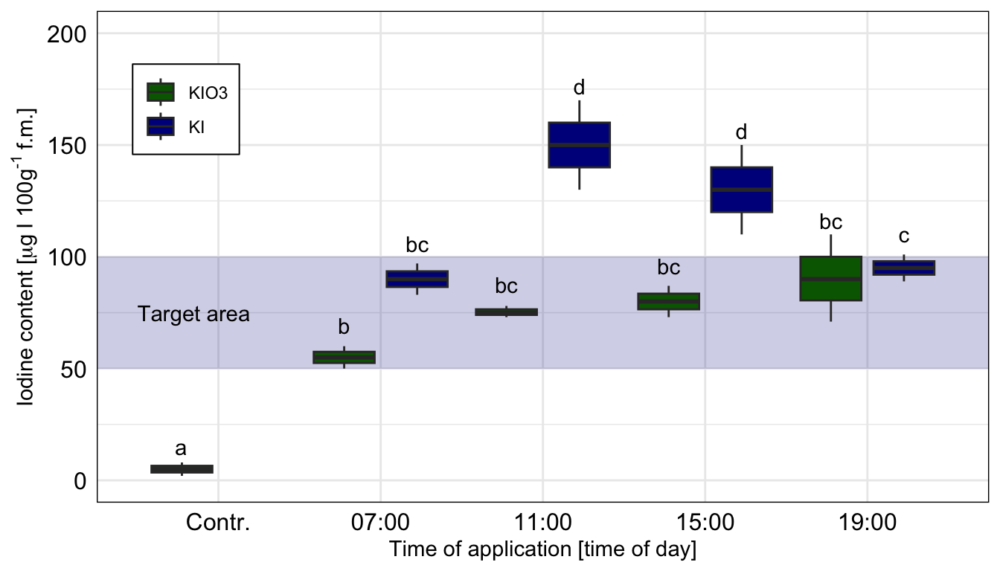
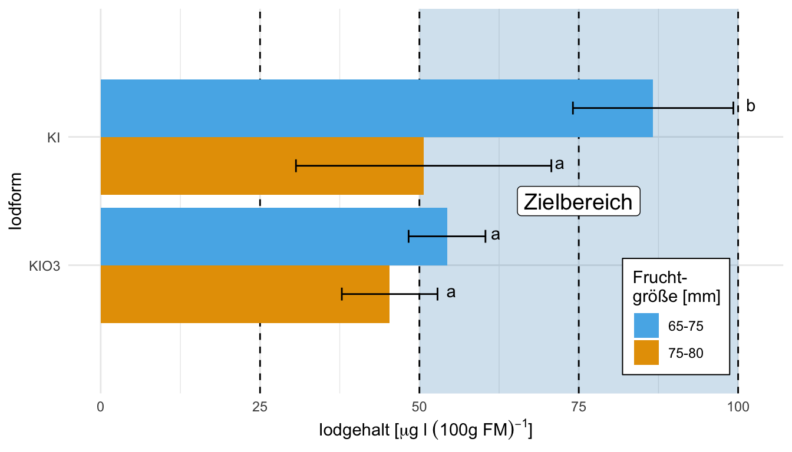
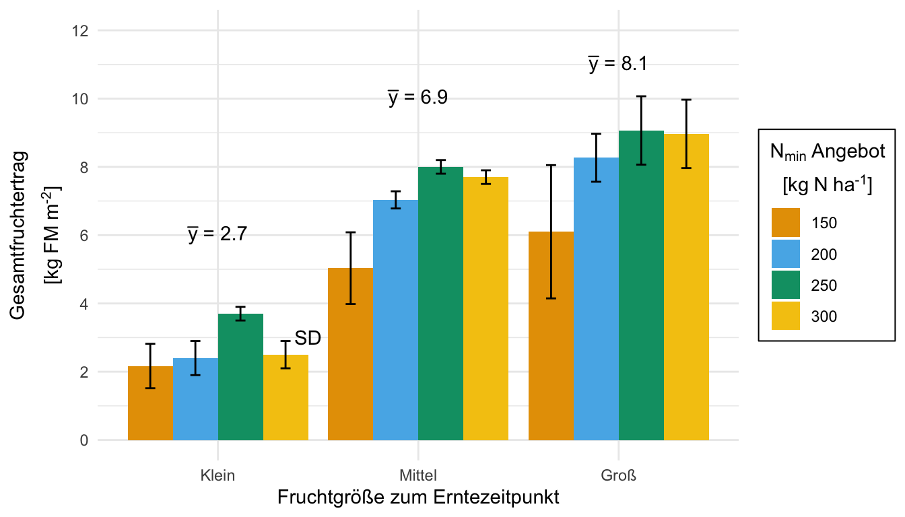
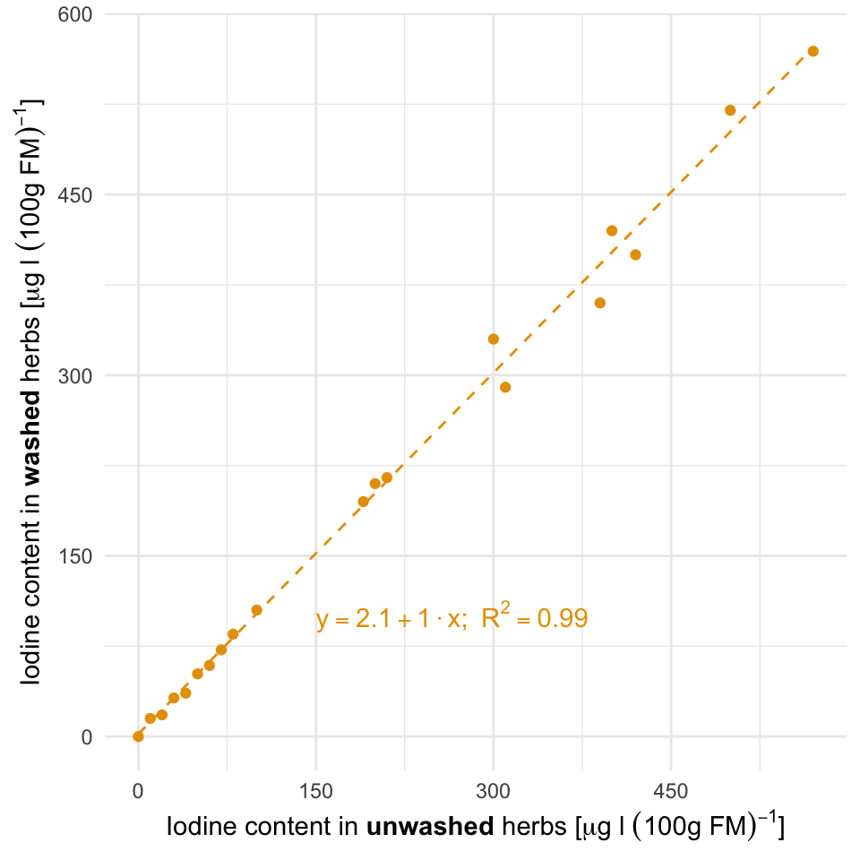
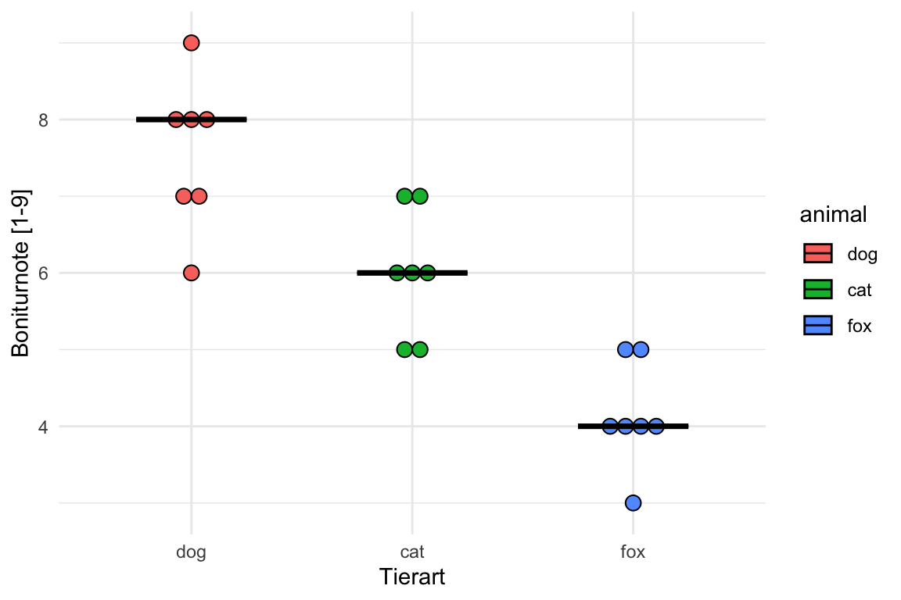
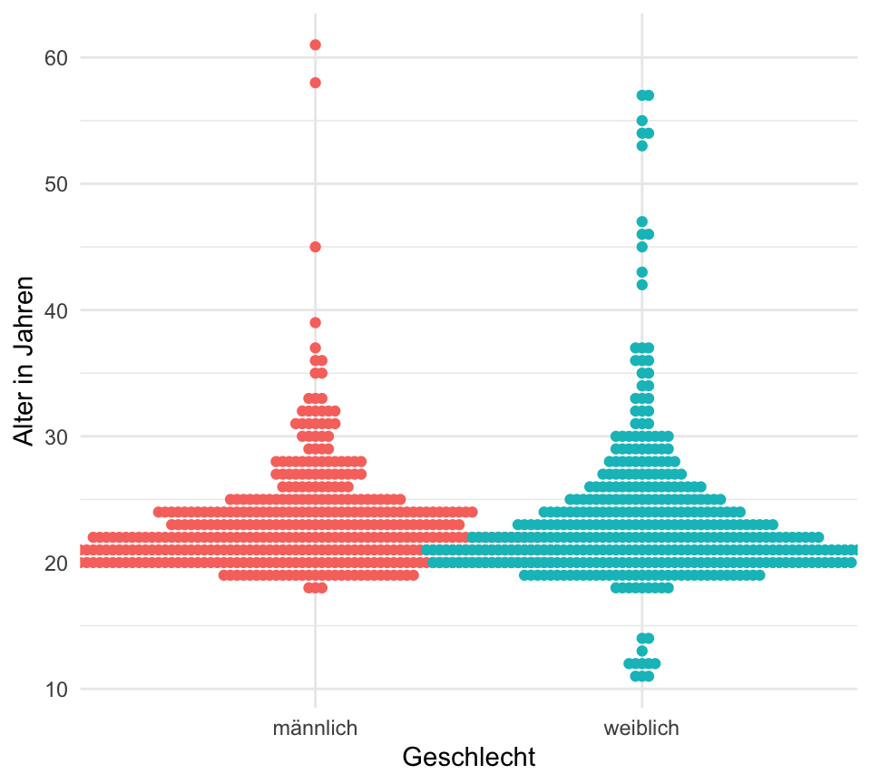
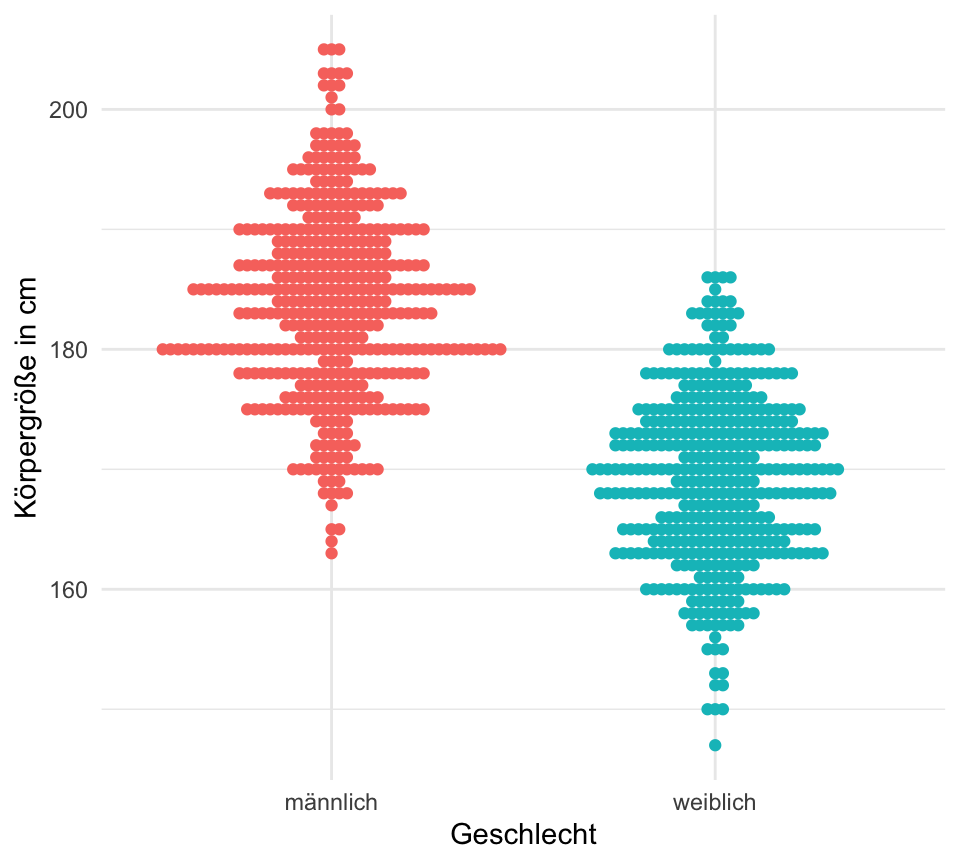

pacman::p_load(tidyverse, magrittr, readxl, ggmosaic,
janitor, see, patchwork, latex2exp, ggbeeswarm,
ggdist, gghalves, conflicted)
conflicts_prefer(dplyr::summarise)
conflicts_prefer(dplyr::filter)
conflicts_prefer(latex2exp::TeX)16 Visualisierung von Daten
Letzte Änderung am 13. January 2024 um 19:56:02
“The greatest value of a picture is when it forces us to notice what we never expected to see.” — John Tukey
Worum geht es in der explorativen Datenanalyse? Die explorative Datenanalyse wurde von John Tukey (1915–2000) begründet. Er war ein Pionier im Bereich der frühen Informatik und Computerwissenschaften. Warum explorativ, was wollen wir den erforschen? Denn nichts anderes bedeutet ja explorativ (deu. erforschend, erkundend, untersuchend) – wir wollen etwas entdecken. Die Idee war ziemlich innovativ und neu als Tukey u. a. (1977) in seinem Buch die explorative Datenanalyse erstmal als Begriff vorstellte. Schon vorher beschrieb Tukey (1962) in seinem Artikel “The Future of Data Analysis” die zukünftige Datenanalyse, wie Tukey sie sich vorstellte, was auch sein folgendes Zitat belegt.
“I know of no person or group that is taking nearly adequate advantage of the graphical potentialities of the computer.” — John Tukey
Nun musst du wissen, dass in den 60’ziger Jahren der Computer in den Kinderschuhen steckte. Mal eben eine Berechnung durchführen, dass war dann schon so eine Sache der damaligen Zeit. Vieles bis fast alles wurde als Tabellen veröffentlicht und selten wurde eine Abbildung händisch dazu erstellt. An dieser Stelle sei einmal auf die Microsoft Excel Werbung aus dem Jahr 1990 verwiesen. Daher war die Idee, sich Daten zu visualisieren entsprechend neu und wirklich ein wissenschaftlicher Fortschritt. Erstaunlicherweise glauben wir heute manchmal dann Zahlen in einer Tabelle mehr als einer Abbildung. Wir schreiben dann den Zahlen eine größere Genauigkeit und Aussagekraft zu, als einer explorativen Abbildung. Dabei können wir in einer Abbildung viel mehr sehen, als in einer Tabelle.
“There is no data that can be displayed in a pie chart, that cannot be displayed BETTER in some other type of chart.” — John Tukey

Daher ist ein wichtiger Teil in der Analyse von Daten die Visualisierung und damit die Darstellung in einer Abbildung. Wir haben aber eine großem Auswahl an möglichen Abbildungen, deshalb auch das lange Kapitel hier. Wir glauben keiner Auswertung eines mathematischen Algorithmus, wenn wir nicht die Bestätigung in einer Abbildung sehen. Wenn wir also einen signifikanten Unterschied aus einem Algorithmus wiedergegeben bekommen, dann müssen wir auch den Unterschied in einer Abbildung sehen können. Eine statistische Analyse und deren Visualisierung gehen Hand in Hand. Daher ist die Visualisierung die Grundlage für ein fundiertes, wissenschaftliches Arbeiten. In diesem Kapitel stelle ich dir verschiedene Abbildungen vor, die uns helfen werden zu Verstehen ob es einen Zusammenhang zwischen \(y\) und \(x\) gibt. Wir haben ein \(y\) vorliegen, was wir auf die y-Achse eines Graphen legen und daneben dann mehrere Variablen bzw. Spalten die wir \(x\) nennen. Eine der Variablen legen wir auf die x-Achse des Graphen. Nach den anderen \(x\) färben wir die Abbildung ein. Wir nennen dabei eine Abbildung auch häufig Plot. Das ist der englische Begriff und hat nichts in unserem Kontext mit einer Fläche zu tun.
In diesem Kapitel wollen wir durch die häufigsten und wichtigsten Abbildungen in der explorativen Datenanalyse durchgehen. Das wären im Folgenden dann diese Abbildungen:
- Barplot in Kapitel 16.3.1 für 5 und mehr Beobachtungen (pro Gruppe). Der Barplot oder das Balkendiagramm bzw. Säulendiagramm stellt den Mittelwert und die Standardabweichung da.
- Boxplot in Kapitel 16.3.2 für 5 bis 20 Beobachtungen (pro Gruppe). Ebenso wie bei einem Histogramm, geht es bei einem Boxplot auch um die Verteilung der einer Variable. Wir können in einem Boxplot auch erkennen, ob sogenannte auffällige Werte oder Ausreißer vorliegen.
- Histogramm in Kapitel 16.3.3 für mehr als 20 Beobachtungen (pro Gruppe). Wir nutzen ein Histogramm um die Verteilung einer Variable zu visualisieren.
- Scatterplot in Kapitel 16.3.5 für zwei kontinuierliche Variablen. Auch xy-Plot genannt. Die Abbildung, die dir bekannt sein müsste. Wir zeichnen hier eine Grade durch eine Punktewolke.
- Dotplot in Kapitel 16.3.6 für 3 bis 5 Beobachtungen (pro Gruppe). Hier geht es weniger um die Verteilung der Variable, sondern darum die wenigen Beobachtungen zu visualisieren.
- Violinplot in Kapitel 16.3.7 für die Kombination von einem Densityplot und einem Boxplot. Dann können wir hier noch den Dotplot ergänzen und haben eine sehr informative Übersichtsabbildung.
- Mosaicplot in Kapitel 16.3.8 für zwei diskrete Variablen. Eine etwas seltene Abbildung, wenn wir Variablen abbilden wollen, die diskret sind bzw. aus Kategorien bestehen.
Beginnen wir also mit dem Teil, der in der Statistik der mir immer am meisten Spaß macht. Oder aber um es in den Worten von John Tukey, den Begründer der explorativen Datenanalyse zu sagen:
“This is my favorite part about analytics: Taking boring flat data and bringing it to life through visualization.” — John Tukey
Wir immer geht natürlich hier auch noch viel mehr am Abbildungen. Du musst nicht alles in ggplot machen und darüber hinaus gibt es dann auch noch einiges an anderen R Paketen. In dem folgenden Kasten habe ich dir mal ein paar Quellen rausgesucht, wo du einmal gucken kannst, wenn du noch mehr Inspiration benötigst. Ich nutze die Seiten auch als Inspiration, den meisten weiß man gar nicht was alles geht, bis man die Visualisierung gesehen hat.
Weitere Möglichkeiten der Visualisierung
Im Folgenden einmal eine Auswahl an weiteren Möglichkeiten sich Abbildungen in R zu visualisieren. Teilweise ist es dann auch eine Sammlung an Informationen für mich, damit ich eine Idee habe, was noch so alles geht. Manchmal braucht man ja auch noch eine zusätzlich Inspiration.
- Data visualization with ggplot2 :: Cheat Sheet – als Überblick über alles was eigentlich in
ggplotmöglich ist. Du kriegst dann nochmal ein Überblick über diegeome, die es gibt und wie die einzelnen Funktionen und Möglichkeiten miteinander interagieren. Du kannst dir das Cheat Sheet auch auf Deutsch runterladen.
- R Charts by R Coder – ein großer Überblick über alle möglichen Abbildungen sortiert nach verschiedenen Kategorien. Hier würde ich auf jeden Fall mal drüber schauen, dann kriegst du nochmal eine Idee was neben
ggplotnoch so alles geht. Ich finde die Seite immer sehr inspirierend. - ALL YOUR FIGURE ARE BELONG TO US ist eine weitere tolle Übersicht an möglichen Abbildungen in
{ggplot}Universum. Die Übersicht zeigt nochmal verschiedene R Pakte mit den entsprechenden möglichen Abbildungen. - sjPlot - Data Visualization for Statistics in Social Science – auch hier geitbes dann die Möglichkeit nochmal etwas anders auf die Visualisierung zu schauen. Denn hier haben wir dann die Möglichkeiten der Sozialwissenschaften mehr abgedeckt. Das mag insbesondere im Bereich von Fragebögen und Marketing von Interesse sein.
- Als spannende zusätzlichen Resourcen seinen das R Paket
cowplotsowie das R Paketggpubrgenannt. Besonders das Paketcowplotliefert noch schöne Formatierungsmöglichkeiten wobei dannggpubrstatistische Test mit der Visualisierung verbindet. - {plotly} R Open Source Graphing Library sowie im besonderen dann die Seite Getting Started with {plotly} in {ggplot2} liefert dann interaktive Abbildungen, wo du dann direkt hereinzoomen kannst. Das ist bei sehr großen Abbildungen immer sehr praktisch. Auch kannst du die Werte einer einzelnen Beobachtung gleich im Plot ablesen.
- How to create BBC style graphics – einmal als ein Beispiel für die Anwendung von
ggplotin der Wirtschaft und Data Science. Auch hier sieht man schön die Ideen die möglich sind. - Visualizing Distributions with Raincloud Plots (and How to Create Them with ggplot2) – manchmal ist dann der Barplot oder Dynamiteplot dann doch irgendwie nicht das richtige Werkzeug um die Daten zu zeigen. Daher hier nochmal der Blogpost mit einer Diskussion was neben dem Säulendiagramm noch so alles gehen könnte.
- ggplot Wizardry Hands-On zeigt nochmal sher schön was alles in
{ggplot}geht, wenn die entsprechenden zusätzlichen Pakete geladen werden. Ich schaue auch hier immer mal wieder rein, wenn ich eine Abbildung besonders schön machen möchte. Hier liegt dann der Fokus auf dem R Paket{gghalves}sowie dem R Paket{ggdist}.
16.1 Genutzte R Pakete
Wir wollen folgende R Pakete in diesem Kapitel nutzen.
Am Ende des Kapitels findest du nochmal den gesamten R Code in einem Rutsch zum selber durchführen oder aber kopieren.
16.2 Grundlagen in ggplot()
“Numerical quantities focus on expected values, graphical summaries on unexpected values.” — John Tukey
Wir nutzen in R das R Paket ggplot2 um unsere Daten zu visualisieren. Die zentrale Idee von ggplot2 ist, dass wir uns eine Abbildung wie ein Sandwich bauen. Zuerst legen wir eine Scheibe Brot hin und legen uns dann Scheibe für Scheibe weitere Schichten übereinander. Oder die Idee eines Bildes, wo wir erst die Leinwand definieren und dann Farbschicht über Farbschicht auftragen. Im Gegensatz zu dem Pipe-Operator %>% nutzt ggplot2 den Operator + um die verschiedenen Funktionen (geom_) miteinander zu verbinden. Das Konzept von ggplot2ist schlecht zu beschreiben deshalb habe ich auch noch zwei Videos hierfür gemacht. Um den Prozess von ggplot2 zu visualisieren - aber wie immer, nutze was du brauchst.
Grundlagen von ggplot() im Video
Du findest auf YouTube Einführung in R - Teil 16.0 - Trockenübung ggplot2 simpel und einfach erklärt als Video. Sowie dann auch auf YouTube Einführung in R - Teil 16.1 - Abbildungen mit ggplot in R erstellen. Idee und Konzept von ggplot als Video. Also alles nochmal als Video - vielleicht einfacher nachzuvollziehen als in einem Fließtext.
Die Funktion ggplot() ist die zentrale Funktion, die die Leinwand erschafft auf der wir dann verschiedene Schichten aufbringen werden. Diese Schichten heißen geom. Es gibt nicht nur ein geom sondern mehrere. Zum Beispiel das geom_boxplot() für die Erstellung von Boxplots, das geom_histogram() für die Erstellung von Histogrammen. Die Auswahl ist riesig. Die einzelnen Schichten werden dann über den Operator + miteinander verbunden. Soviel erstmal zur Trockenübung. Schauen wir uns das ganze einmal an einem Beispiel an. Dafür müssen wir dann erstmal einen Datensatz laden, damit wir auch etwas zum abbilden haben.
16.2.1 Daten
Wir importieren den Datensatz flea_cat_dog.xlsx und wollen einzelne Variablen visualisieren. Wir kennen den Datensatz schon aus den vorherigen Beispielen. Dennoch nochmal hier der Datensatz in Tabelle 16.1 einmal dargestellt.
flea_dog_cat_tbl <- read_excel("data/flea_dog_cat.xlsx") %>%
mutate(animal = as_factor(animal))Im Folgenden ist es wichtig, dass du dir die Spaltennamen merkst. Wir können nur die exakten, wortwörtlichen Spaltennamen verwenden. Sonst erhalten wir einen Fehler. Deshalb haben wir auch keine Leerzeichen in den Spaltennamen.
| animal | jump_length | flea_count | weight | grade | infected |
|---|---|---|---|---|---|
| dog | 5.7 | 18 | 2.1 | 8 | 0 |
| dog | 8.9 | 22 | 2.3 | 8 | 1 |
| dog | 11.8 | 17 | 2.8 | 6 | 1 |
| dog | 5.6 | 12 | 2.4 | 8 | 0 |
| dog | 9.1 | 23 | 1.2 | 7 | 1 |
| dog | 8.2 | 18 | 4.1 | 7 | 0 |
| dog | 7.6 | 21 | 3.2 | 9 | 0 |
| cat | 3.2 | 12 | 1.1 | 7 | 1 |
| cat | 2.2 | 13 | 2.1 | 5 | 0 |
| cat | 5.4 | 11 | 2.4 | 7 | 0 |
| cat | 4.1 | 12 | 2.1 | 6 | 0 |
| cat | 4.3 | 16 | 1.5 | 6 | 1 |
| cat | 7.9 | 9 | 3.7 | 6 | 0 |
| cat | 6.1 | 7 | 2.9 | 5 | 0 |
Wir brauchen dann ab und an auch nochmal mehr Datenpunkte, daher nehmen wir auch einmal den Gummibärchendatensatz und schauen uns dort die Variablen gender, height und age einmal genauer an. Wie immer nutzen wir die Funktion select() um die Spalten zu selektieren. Abschließend verwandeln wir das Geschlecht gender noch in einen Faktor und entfernen alle fehlenden Werte mit na.omit().
gummi_tbl <- read_excel("data/gummibears.xlsx") %>%
select(gender, height, age) %>%
mutate(gender = factor(gender, labels = c("männlich", "weiblich"))) %>%
na.omit()16.2.2 Erste Abbildung in ggplot()
Erstellen wir also erstmal unseren erste Visualisierung in ggplot(). Wie immer empfehle ich dir dann auch das entsprechende Video auf YouTube anzuschauen. In Textform ist eine echte Herausforderung zu erklären wie man Plots baut. Der folgende R Code erstellt die Leinwand in der Abbildung 16.2 für die folgende, zusätzliches Schichten (geom). Wir haben also immer erst eine leere Leinwand auf der wir dann zusätzlich geome plotten. Wir bauen uns sozusagen ein Sandwich.
ggplot(data = flea_dog_cat_tbl,
aes(x = animal , y = jump_length)) +
theme_minimal()Wir schauen uns einmal den Code im Detail an.
ggplotruft die Funktion auf. Die Funktion ist dafür da den Plot zu zeichnen.data = flea_dog_cat_tblbenennt den Datensatz aus dem der Plot gebaut werden soll.aes()ist die Abkürzung für aesthetics und beschreibt, was auf die \(x\)-Achse soll, was auf die \(y\)-Achse soll sowie ob es noch andere Faktoren in den Daten gibt. Wir können nämlich noch nach anderen Spalten die Abbildung einfärben oder anderweitig ändern.xbraucht den Spaltennamen für die Variable auf der \(x\)-Achse.ybraucht den Spaltennamen für die Variable auf der \(y\)-Achse.
+ theme_minimal()setzt das Canvas oder die Leinwand auf schwarz/weiß. Sonst wäre die Leinwand flächig grau.
Mit Faktoren meine ich hier andere Gruppenvariablen. Variablen sind ein anderes Wort für Spalten. Also Variablen die wir mit as_factor erschaffen haben und die uns noch mehr über unsere Daten dann verraten können. Hier ist es dann etwas abstrakt, aber es wird dann später in der Anwendung klarer.

animal und jump_length aus dem Datensatz flea_dog_cat_tbl.Am Ende sehen wir, dass wir nichts sehen. In der Abbildung 16.2 ist nichts dargestellt. Der Grund ist, dass wir noch kein geom hinzugefügt haben. Das geom beschreibt nun wie die Zahlen in der Datentabelle flea_dog_cat_tbl visualisiert werden sollen. Wir habe eine sehr große Auswahl an geomen, deshalb gibt es gleich einmal eine Auswahl an Abbildungen.
16.3 Die häufigsten Abbildungen
Im Folgenden gehen wir dann einmal die wichtigsten Abbildungen einmal durch. Viele der Abbildungen kennst du vielleicht schon und dann musst du hier nur noch schauen, wie die Abbildungen in ggplot zu realisieren sind. Ansonsten gilt wie immer, es ist nur ein kleiner Ausschnitt, du findest auf der Hilfeseite von ggplot eine sehr viel größere Übersicht.
Histogramm, Boxplot, Scatterplot und Mosaicplot im Video
Du findest auf YouTube Einführung in R - Teil 16.2 - Histogramm, Boxplot, Scatterplot und Mosaicplot mit ggplot in R als Video. Weitere Videos werden dann noch folgen und ergänzt.
16.3.1 Barplot oder Balkendiagramm oder Säulendiagramm
Der Barplot oder das Balkendiagramm auch Säulendiagramm ist eigentlich veraltet. Wir haben mit dem Boxplot eine viel bessere Methode um eine Verteilung und gleichzeitig auch die Gruppenunterschiede zu visualisieren. Warum nutzen wir jetzt so viel den Barplot? Das hat damit zu tun, dass früher - oder besser bis vor kurzem - in Excel kein Boxplot möglich war. Daher nutzte jeder der mit Excel seine Daten auswertet den Barplot. Und was der Bauer nicht kennt… deshalb ist hier auch der Barplot dargestellt. Ich persönlich mag den Barplot eher weniger. Der Barplot ist einfach schlechter als der Boxplot. Wir haben nur die Standardabweichung als Maßzahl für die Streuung. Beim Boxplot haben wir das IQR, was uns mehr über die Streuung aussagt. Aber gut, häufig musst du den Barplot in deiner Abschlussarbeit machen. Also dann hier der Barplot. Wie erstellen wir nun einen Barplot in R? Zuerst laden wir die Daten mit der Funktion read_excel() in R, wenn du die Daten als .xlsx Datei vorliegen hast.
flea_dog_cat_tbl <- read_excel("data/flea_dog_cat.xlsx")Wir müssen jetzt für ggplot() noch den Mittelwert und die Streuung für die Gruppen berechnen. Du kannst als Streuung die Standardabweichung oder den Standardfehler nehmen. Ich würde die Standardabweichung bei kleinen Fallzahlen kleiner als 20 Beobachtungen nehmen.
stat_tbl <- flea_dog_cat_tbl %>%
group_by(animal) %>%
summarise(mean = mean(jump_length),
sd = sd(jump_length),
se = sd/sqrt(n()))Wir nutzen nun das Objekt stat_tbl um den Barplot mit der Funktion ggplot() zu erstellen. Dabei müssen wir zum einen schauen, dass die Balken nicht übereinander angeordnet sind. Nebeneinander angeordnete Balken kriegen wir mit der Option stat = "identity" in dem geom_bar(). Dann müssen wir noch die Fehlerbalken ergänzen mit dem geom_errorbar. Hier kann nochmal mit der Option width = an der Länge der Fehlerenden gedreht werden.
ggplot(stat_tbl, aes(x = animal, y = mean, fill = animal)) +
theme_minimal() +
geom_bar(stat = "identity") +
geom_errorbar(aes(ymin = mean-sd, ymax = mean+sd),
width = 0.2)
Schau doch auch mal in den ein oder anderen Zerforschenkasten, da findest du dann noch mehr Inspiration aus anderen Abbildungen, die ich nachgebaut habe. Ich bin einmal über den Campus gelaufen und habe geschaut, welche Barplots so auf den Postern verwendet werden. Im Folgenden dann einmal eine Reihe von Barplots zerforscht und in ggplot nachgebaut.
Zerforschen: Einfaktorieller Barplot mit compact letter display
In diesem Zerforschenbeispiel wollen wir uns einen einfaktoriellen Barplot oder Säulendiagramm anschauen. Daher fangen wir mit der folgenden Abbildung einmal an. Wir haben hier ein Säulendiagramm mit Compact letter display vorliegen. Daher brauchen wir eigentlich gar nicht so viele Zahlen. Für jede der vier Behandlungen jeweils einmal einen Mittelwert für die Höhe der Säule sowie einmal die Standardabweichung. Die Standardabweichung addieren und subtrahieren wir dann jeweils von dem Mittelwert und schon haben wir die Fehlerbalken.

Als erstes brauchen wir die Daten. Die Daten habe ich mir in dem Datensatz zerforschen_barplot_simple.xlsx selber ausgedacht. Ich habe einfach die obige Abbildung genommen und den Mittelwert abgeschätzt. Dann habe ich die vier Werte alle um den Mittelwert streuen lassen. Dabei habe ich darauf geachtet, dass die Streuung dann in der letzten Behandlung am größten ist. Da wir beim Einlesen keine Umlaute oder sonstige Leerzeichen wollen, habe ich alles sehr simple aufgeschrieben und dann in R in der Funktion factor() richtig über die Option levels sortiert und über die Option labels sauber beschrieben. Dann passt auch die Sortierung der \(x\)-Achse.
barplot_tbl <- read_excel("data/zerforschen_barplot_simple.xlsx") %>%
mutate(trt = factor(trt,
levels = c("water", "rqflex",
"nitra", "laqua"),
labels = c("Wasserdestilation",
"RQflex Nitra",
"Nitrachek",
"Laqua Nitrat")))
barplot_tbl # A tibble: 16 × 2
trt nitrat
<fct> <dbl>
1 Wasserdestilation 135
2 Wasserdestilation 130
3 Wasserdestilation 145
4 Wasserdestilation 135
5 RQflex Nitra 120
6 RQflex Nitra 130
7 RQflex Nitra 135
8 RQflex Nitra 135
9 Nitrachek 100
10 Nitrachek 120
11 Nitrachek 130
12 Nitrachek 130
13 Laqua Nitrat 230
14 Laqua Nitrat 210
15 Laqua Nitrat 205
16 Laqua Nitrat 220Jetzt brauchen wir noch die Mittelwerte und die Standardabweichung für jede der vier Behandlungen. Den Code kennst du schon von oben wo wir die Barplots für die Sprungweiten der Hunde- und Katzenflöhe gebaut haben. Hier habe ich dann den Code entsprechen der Daten barplot_tbl angepasst. Wir haben ja als Gruppierungsvariabel trt vorliegen und wollen die Mittelwerte und die Standardabweichung für die Variable nitrat berechnen.
stat_tbl <- barplot_tbl %>%
group_by(trt) %>%
summarise(mean = mean(nitrat),
sd = sd(nitrat))
stat_tbl# A tibble: 4 × 3
trt mean sd
<fct> <dbl> <dbl>
1 Wasserdestilation 136. 6.29
2 RQflex Nitra 130 7.07
3 Nitrachek 120 14.1
4 Laqua Nitrat 216. 11.1 Und dann haben wir auch schon die Abbildung 16.4 erstellt. Ja vielleicht passen die Standardabweichungen nicht so richtig, da könnte man nochmal an den Daten spielen und die Werte solange ändern, bis es besser passt. Du hast aber jetzt eine Idee, wie der Aufbau funktioniert.
ggplot(data = stat_tbl, aes(x = trt, y = mean,
fill = trt)) +
theme_minimal() +
geom_bar(stat = "identity") +
geom_errorbar(aes(ymin = mean-sd, ymax = mean+sd),
width = 0.2) +
labs(x = "",
y = "Nitrat-Konzentration \n im Tannensaft [mg/L]") +
ylim(0, 250) +
theme(legend.position = "none") +
scale_fill_okabeito() +
annotate("text",
x = c(1.05, 2.05, 3.05, 4.05),
y = stat_tbl$mean + stat_tbl$sd + 8,
label = c("b", "b", "a", "c"))- 1
- Hier werden die Säulen des Säulendiagramms erstellt.
- 2
-
Hier werden die Fehlerbalken erstellt. Die Option
widthsteuert wie breit die Fehlerbalken sind. - 3
- Hier wird eine Farbpalette für farbblinde Personen geladen.

ggplot nachgebaut.Am Ende kannst du dann folgenden Code noch hinter deinen ggplot Code ausführen um dann deine Abbildung als *.png-Datei zu speichern. Dann hast du die Abbildung super nachgebaut und sie sieht auch wirklich besser aus.
ggsave("my_ggplot_barplot.png", width = 5, height = 3)
Zerforschen: Zweifaktorieller Barplot mit compact letter display
In diesem Zerforschenbeispiel wollen wir uns einen zweifaktoriellen Barplot oder Säulendiagramm anschauen. Wir haben hier ein Säulendiagramm mit compact letter display vorliegen. Daher brauchen wir eigentlich gar nicht so viele Zahlen. Für jede der vier Zeitpunkte und der Kontrolle jeweils einmal einen Mittelwert für die Höhe der Säule sowie einmal die Standardabweichung. Die Standardabweichung addieren und subtrahieren wir dann jeweils von dem Mittelwert und schon haben wir die Fehlerbalken.

Als erstes brauchen wir die Daten. Die Daten habe ich mir in dem Datensatz zerforschen_barplot_2fac_target.xlsx selber ausgedacht. Ich habe einfach die obige Abbildung genommen und den Mittelwert abgeschätzt. Dann habe ich die drei Werte alle um den Mittelwert streuen lassen. Da wir beim Einlesen keine Umlaute oder sonstige Leerzeichen wollen, habe ich alles sehr simple aufgeschrieben und dann in R in der Funktion factor() richtig über die Option levels sortiert und über die Option labels sauber beschrieben. Dann passt auch die Sortierung der \(x\)-Achse.
barplot_tbl <- read_excel("data/zerforschen_barplot_2fac_target.xlsx") %>%
mutate(time = factor(time,
levels = c("ctrl", "7", "11", "15", "19"),
labels = c("Contr.", "07:00", "11:00", "15:00", "19:00")),
type = as_factor(type))
barplot_tbl # A tibble: 27 × 3
time type iodine
<fct> <fct> <dbl>
1 07:00 KIO3 50
2 07:00 KIO3 55
3 07:00 KIO3 60
4 07:00 KI 97
5 07:00 KI 90
6 07:00 KI 83
7 11:00 KIO3 73
8 11:00 KIO3 75
9 11:00 KIO3 78
10 11:00 KI 130
# ℹ 17 more rowsJetzt brauchen wir noch die Mittelwerte und die Standardabweichung für jede der vier Behandlungen. Hier nur kurz, den Code kennst du schon aus anderen Zerforschenbeispielen zu den Barplots.
stat_tbl <- barplot_tbl %>%
group_by(time, type) %>%
summarise(mean = mean(iodine),
sd = sd(iodine))
stat_tbl# A tibble: 9 × 4
# Groups: time [5]
time type mean sd
<fct> <fct> <dbl> <dbl>
1 Contr. KIO3 5 3
2 07:00 KIO3 55 5
3 07:00 KI 90 7
4 11:00 KIO3 75.3 2.52
5 11:00 KI 150 20
6 15:00 KIO3 80 7
7 15:00 KI 130 20
8 19:00 KIO3 90.3 19.5
9 19:00 KI 95 6 Und dann geht es auch schon los. Wir müssen am Anfang einmal scale_x_discrete() setzen, damit wir gleich den Zielbereich ganz hinten zeichnen können. Sonst ist der blaue Bereich im Vordergrund. Dann färben wir auch mal die Balken anders ein. Muss ja auch mal sein. Auch nutzen wir die Funktion geom_text() um das compact letter display gut zu setzten. Die \(y\)-Position berechnet sich aus dem Mittelwert plus Standardabweichung innerhalb des geom_text(). Leider haben wir nur einen Balken bei der Kontrolle, deshalb hier nachträglich der Buchstabe mit annotate(). Ich habe mich dann noch entschieden neben dem Barplot noch den Boxplot als Alternative zu erstellen.
Einmal der Barplot wie beschrieben. Am besten löscht du immer mal wieder eine Zeile Code damit du nachvollziehen kannst, was die Zeile Code in der Abbildung macht. Vergleiche auch einmal diese Abbildung der Barplots mit der Abbildung der Boxplots und überlege, welche der beiden Abbildungen dir mehr Informationen liefert.
ggplot(data = stat_tbl, aes(x = time, y = mean,
fill = type)) +
theme_minimal() +
scale_x_discrete() +
annotate("rect", xmin = 0.25, xmax = 5.75, ymin = 50, ymax = 100,
alpha = 0.2, fill = "darkblue") +
annotate("text", x = 0.5, y = 75, hjust = "left", label = "Target area") +
geom_bar(stat = "identity",
position = position_dodge(width = 0.9, preserve = "single")) +
geom_errorbar(aes(ymin = mean-sd, ymax = mean+sd),
width = 0.2,
position = position_dodge(width = 0.9, preserve = "single")) +
scale_fill_manual(name = "Type", values = c("darkgreen", "darkblue")) +
theme(legend.position = c(0.1, 0.8),
legend.title = element_blank(),
legend.spacing.y = unit(0, "mm"),
panel.border = element_rect(colour = "black", fill=NA),
axis.text = element_text(colour = 1, size = 12),
legend.background = element_blank(),
legend.box.background = element_rect(colour = "black")) +
labs(x = "Time of application [time of day]",
y = expression(Iodine~content~"["*mu*g~I~100*g^'-1'~f*.*m*.*"]")) +
scale_y_continuous(breaks = c(0, 50, 100, 150, 200),
limits = c(0, 200)) +
geom_text(aes(label = c("", "b", "bc", "bc", "d", "bc", "d", "bc", "c"),
y = mean + sd + 2),
position = position_dodge(width = 0.9), vjust = -0.25) +
annotate("text", x = 0.77, y = 15, label = "a") 
ggplot nachgebaut. Wir nutzen das geom_text() um noch besser unser compact letter display zu setzen.Für die Boxplost brauchen wir dann noch ein Objekt mehr. Um das compacte letter dislay an die richtige Position zu setzen brauchen wir noch eine \(y\)-Position. Ich nehme hier dann das 90% Quantile. Das 90% Quantile sollte dann auf jeden Fall über die Schnurrhaare raus reichen. Wir nutzen dann den Datensatz letter_pos_tbl in dem geom_text() um die Buchstaben richtig zu setzen.
letter_pos_tbl <- barplot_tbl %>%
group_by(time, type) %>%
summarise(quant_90 = quantile(iodine, probs = c(0.90)))
letter_pos_tbl# A tibble: 9 × 3
# Groups: time [5]
time type quant_90
<fct> <fct> <dbl>
1 Contr. KIO3 7.4
2 07:00 KIO3 59
3 07:00 KI 95.6
4 11:00 KIO3 77.4
5 11:00 KI 166
6 15:00 KIO3 85.6
7 15:00 KI 146
8 19:00 KIO3 106
9 19:00 KI 99.8Und dann müssen wir nur noch das geom_bar() und geom_errorbar() entfernen und durch das geom_boxplot() ersetzen. Dann haben wir auch schon unsere wunderbaren Boxplots. Das Problem sind natürlich die wenigen Beobachtungen, deshalb sehen die Boxplots teilweise etwas wild aus. Beachte auch das wir die Orginaldaten nutzen und nicht die zusammengefassten Daten.
ggplot(data = barplot_tbl, aes(x = time, y = iodine,
fill = type)) +
theme_minimal() +
scale_x_discrete() +
annotate("rect", xmin = 0.25, xmax = 5.75, ymin = 50, ymax = 100,
alpha = 0.2, fill = "darkblue") +
annotate("text", x = 0.5, y = 75, hjust = "left", label = "Target area") +
geom_boxplot(position = position_dodge(width = 0.9, preserve = "single")) +
scale_fill_manual(name = "Type", values = c("darkgreen", "darkblue")) +
theme(legend.position = c(0.1, 0.8),
legend.title = element_blank(),
legend.spacing.y = unit(0, "mm"),
panel.border = element_rect(colour = "black", fill=NA),
axis.text = element_text(colour = 1, size = 12),
legend.background = element_blank(),
legend.box.background = element_rect(colour = "black")) +
labs(x = "Time of application [time of day]",
y = expression(Iodine~content~"["*mu*g~I~100*g^'-1'~f*.*m*.*"]")) +
scale_y_continuous(breaks = c(0, 50, 100, 150, 200),
limits = c(0, 200)) +
geom_text(data = letter_pos_tbl,
aes(label = c("", "b", "bc", "bc", "d", "bc", "d", "bc", "c"),
y = quant_90 + 5),
position = position_dodge(width = 0.9), vjust = -0.25) +
annotate("text", x = 0.77, y = 15, label = "a") 
ggplot als Boxplot nachgebaut. Wir nutzen das geom_text() um noch besser unser compact letter display zu setzen, dafür müssen wir usn aber nochmal ein Positionsdatensatz bauen.Am Ende kannst du dann folgenden Code noch hinter deinen ggplot Code ausführen um dann deine Abbildung als *.png-Datei zu speichern. Dann hast du die Abbildung super nachgebaut und sie sieht auch wirklich besser aus.
ggsave("my_ggplot_barplot.png", width = 5, height = 3)
Zerforschen: Zweifaktorieller, gekippter Barplot mit Zielbereich
In diesem Zerforschenbeispiel wollen wir uns einen zweifaktoriellen Barplot oder Balkendiagramm anschauen. Wir haben hier ein echtes Balkendiagramm mit compact letter display vorliegen. Daher brauchen wir eigentlich gar nicht so viele Zahlen. Für jede der vier Zeitpunkte und der Kontrolle jeweils einmal einen Mittelwert für die Länge des Balkens sowie einmal die Standardabweichung. Die Standardabweichung addieren und subtrahieren wir dann jeweils von dem Mittelwert und schon haben wir die Fehlerbalken. Ich habe hier dann jeweils drei Werte für jede Faktorkombination. Die brauche ich dann auch, weil ich später nochmal vergleichend den Boxplot erstellen möchte. Der macht meiner Ansicht nach hier mehr Sinn.

Als erstes brauchen wir wieder die Daten. Die Daten habe ich mir in dem Datensatz zerforschen_barplot_2fac.xlsx selber ausgedacht. Ich habe einfach die obige Abbildung genommen und den Mittelwert abgeschätzt. Dann habe ich die drei Werte alle um den Mittelwert streuen lassen. Das war es dann auch schon.
barplot_tbl <- read_excel("data/zerforschen_barplot_2fac_flipped.xlsx") %>%
mutate(iod = fct_rev(iod),
fruit = fct_rev(fruit))
barplot_tbl# A tibble: 12 × 3
iod fruit iod_yield
<fct> <fct> <dbl>
1 KI 65-75 85
2 KI 65-75 100
3 KI 65-75 75
4 KI 75-80 52
5 KI 75-80 70
6 KI 75-80 30
7 KIO3 65-75 55
8 KIO3 65-75 48
9 KIO3 65-75 60
10 KIO3 75-80 45
11 KIO3 75-80 53
12 KIO3 75-80 38Jetzt brauchen wir noch die Mittelwerte und die Standardabweichung für jede der vier Behandlungen. Hier nur kurz, den Code kennst du schon aus anderen Zerforschenbeispielen zu den Barplots.
stat_tbl <- barplot_tbl %>%
group_by(iod, fruit) %>%
summarise(mean = mean(iod_yield),
sd = sd(iod_yield))
stat_tbl# A tibble: 4 × 4
# Groups: iod [2]
iod fruit mean sd
<fct> <fct> <dbl> <dbl>
1 KIO3 75-80 45.3 7.51
2 KIO3 65-75 54.3 6.03
3 KI 75-80 50.7 20.0
4 KI 65-75 86.7 12.6 Im Folgenden stelle ich die zusammengefassten Daten stat_tbl als Balkendiagramm dar. Die ursprünglichen Daten barplot_tbl kann ich nutzen um die Boxplots zu erstellen. Hier ist wichtig nochmal zu erinnern, das wir Barplots auf dem Mittelwert und der Standardabweichung darstellen und die Boxplots auf den Originaldaten. Mit der unteren Grenze machen Boxplots mehr Sinn, wenn du wissen willst, ob du einen Zielbereich vollkommen erreicht hast.
Zuerst einmal der Barplot, wie wir ihn auch schon oben in der Abbildung sehen. Wir nutzen hier zum einen die Funktion coord_flip() um ganz zum Schluss die Abbildung zu drehen. Deshalb musst du aufpassen, denn vor dem Flippen ist ja alles auf der \(y\)-Achse die \(y\)-Achse und umgekehrt. Deshalb müssen wir dann auch teilweise die Ordnung der Level in den einzelnen Faktoren drehen, damit wir wieder die richtige Reihenfolge nach dem Flip haben. Wir müssen ganz am Anfang einmal scale_x_discrete() setzen, damit wir den Zielbereich als erstes einzeichnen können. Sonst ist der Zielbereich nicht ganz hinten in der Abbildung und überdeckt die Balken. Deshalb ist das Wort “Zielbereich” auch recht weit hinten im Code, damit es eben im Vordergrund ist. Sonst ist eigentlich vieles gleich. Wir nutzen hier einmal das R Paket latex2exp für die Erstellung der mathematischen Formeln.
ggplot(data = stat_tbl, aes(x = iod, y = mean,
fill = fruit)) +
theme_minimal() +
scale_x_discrete() +
annotate("rect", xmin = 0, xmax = 3, ymin = 50, ymax = 100,
alpha = 0.2, fill = cbbPalette[6]) +
geom_hline(yintercept = c(25, 50, 75, 100), linetype = "dashed") +
geom_bar(stat = "identity", position = position_dodge(0.9)) +
geom_errorbar(aes(ymin = mean-sd, ymax = mean+sd),
width = 0.2, position = position_dodge(0.9)) +
labs(x = "Iodform",
y =TeX(r"(Iodgehalt $[\mu g\, l\, (100g\, FM)^{-1}]$)")) +
scale_fill_okabeito(name = "Frucht-\ngröße [mm]", breaks=c('65-75', '75-80')) +
theme(legend.position = c(0.85, 0.2),
legend.box.background = element_rect(color = "black"),
legend.box.margin = margin(t = 1, l = 1),
legend.text.align = 0) +
annotate("label", x = 1.5, y = 75, label = "Zielbereich", size = 5) +
annotate("text", x = c(0.8, 1.25, 1.8, 2.25), y = c(55, 62, 72, 102),
label = c("a", "a", "a", "b")) +
coord_flip() 
ggplot nachgebaut. Ein extra Zielbereich ist definiert sowie die Legende in die Abbildung integriert.Für die Boxplots müssen wir gar nicht viel tun. Wir müssen nur noch das geom_bar() und geom_errorbar() entfernen und durch das geom_boxplot() ersetzen. Dann haben wir auch schon unsere wunderbaren Boxplots. Das Problem sind natürlich die wenigen Beobachtungen, deshalb sehen die Boxplots teilweise etwas wild aus. Beachte auch das wir die Orginaldaten nutzen und nicht die zusammengefassten Daten. Am Ende machen Boxplots mit einer unteren Grenze mehr Sinn, wenn wir uns Fragen, ob wir einen Zielbereich erreicht haben. Da sind dann doch Balkendiagramme etwas ungeeignet.
ggplot(data = barplot_tbl, aes(x = iod, y = iod_yield,
fill = fruit)) +
theme_minimal() +
geom_hline(yintercept = c(25, 50, 75, 100), linetype = "dashed") +
geom_boxplot() +
labs(x = "Iodform",
y =TeX(r"(Iodgehalt $[\mu g\, l\, (100g\, FM)^{-1}]$)")) +
scale_fill_okabeito(name = "Frucht-\ngröße [mm]", breaks=c('65-75', '75-80')) +
theme(legend.position = c(0.85, 0.2),
legend.box.background = element_rect(color = "black"),
legend.box.margin = margin(t = 1, l = 1),
legend.text.align = 0) +
annotate("rect", xmin = 0, xmax = 3, ymin = 50, ymax = 100,
alpha = 0.2, fill = cbbPalette[6]) +
annotate("label", x = 1.5, y = 75, label = "Zielbereich", size = 5) +
annotate("text", x = c(0.8, 1.25, 1.8, 2.25), y = c(55, 62, 72, 102),
label = c("a", "a", "a", "b")) +
coord_flip() 
ggplot nachgebaut. Durch den Boxplot erhalten wir auch untere Grenzen, was bei der Frage, ob wir in einem Zielbereich sind, viel sinnvoller ist, als ein Balkendiagramm. Eine höhere Fallzahl als \(n=3\) würde die Boxplots schöner machen.16.3.2 Boxplot
Mit dem Boxplot können wir den Median und die Quartile visualisieren. In Abbildung 16.11 sehen wir einen Boxplot, der den Median und die Quartile visualisiert. Die Box wird aus dem IQR gebildet. Der Median wird als Strich in der Box gezeigt. Die Schnurrhaare (eng. Whiskers) sind das 1.5 fache des IQR. Punkte die außerhalb der Schnurrhaare liegen werden als einzelne Punkte dargestellt. Diese einzelnen Punkte werden auch als Ausreißer (eng. Outlier) bezeichnet.

In Abbildung 16.12 sehen wir den Zusammenhang zwischen einem Histogramm, Densityplot und dem Boxplot. Der Median \(\tilde{y}\) im Boxplot zeigt die höchste Stelle des Densityplots an. Durch einen Boxplot kann die Verteilung der entsprechenden Zahlen abgeschätzt werden.

Die “liegende” Darstellung des Boxplots dient nur der Veranschaulichung und dem Verständnis des Zusammenhangs von Histogramm und Boxplot. In der Abbildung 16.13 sehen wir drei Boxplots für einen Faktor mit drei Leveln. Jedes Level wird duch einen Boxplot dargestellt. Zum Beispiel eine Düngerbehandlung mit drei Konzentrationen. Auf der x-Achse würden wir die Behandelung finden und auf der y-Achse das Trockengewicht in [kg/ha].

Wie erstellen wir nun einen Boxplot in R? Zuerst laden wir die Daten mit der Funktion read_excel() in R, wenn du die Daten als .xlsx Datei vorliegen hast. Im XX kannst du nochmal das Importieren von Daten wiederholen.
flea_dog_cat_tbl <- read_excel("data/flea_dog_cat.xlsx")
In Abbildung 16.14 ist der Boxplot für die Daten aus der Datei flea_dog_cat.xlsx dargestellt. Auf der x-Achse finden wir die Tierart als cat und dog. Auf der y-Achse ist die Sprungweite in [cm] dargestellt.
Wir erkennen auf einen Blick, dass die Sprungweite von den Hundeflöhen weiter ist als die Sprungweite der Katzenflöhe. Im Weiteren können wir abschätzen, dass die Streuung etwa gleich groß ist. Die Boxen sind in etwa gleich groß und die Whiskers in etwa gleich lang.
ggplot(data = flea_dog_cat_tbl, aes(x = animal, y = jump_length,
fill = animal)) +
geom_boxplot() +
geom_jitter(width = 0.25, shape = 1) +
theme_minimal() +
labs(x = "Tierart", y = "Sprungweite [cm]") 
Wir neigen dazu die Boxplots über zu interpretieren, wenn die Anzahl der Beobachtungen klein ist. Deshalb können wir mit dem geom_jitter() noch die Beobachtungen zu den Boxplot ergänzen, dargestellt in Abbildung 16.15. Die Funktion geom_jitter() streut die Punkte zufällig, so dass keine Punkte übereinander liegen. Wir haben hier die Streuweite durch die Option width = 0.25 etwas eingeschränkt. Darüber hinaus habe wir das Aussehen der Punkte mit shape = 1 geändert, so dass wir die Jitter-Punkte von den potenziellen Ausreißer-Punkten unterscheiden können. Du kannst auch andere Zahlen hinter shape eintragen um verschiedene Punktesymbole durch zuprobieren. Eine Übersicht an shapes findest du auch hier unter Cookbook for R > Graphs > Shapes and line types.
Schau dir auch hier mal in den Zerforschenkasten an, da findest du dann noch mehr Inspiration aus anderen Abbildungen, die ich nachgebaut habe. Ich bin einmal über den Campus gelaufen und habe geschaut, welche Barplots so auf den Postern verwendet werden und habe hier auch einmal einen Boxplot aus dem Barplot gebaut.
Zerforschen: Zweifaktorieller Barplot oder Boxplot
In diesem Zerforschenbeispiel wollen wir uns einen zweifaktoriellen Barplot oder Säulendiagramm anschauen. Wir haben hier ein Säulendiagramm mit den Mittelwerten über den Faktor auf der \(x\)-Achse vorliegen. Daher brauchen wir eigentlich gar nicht so viele Zahlen. Für jede der drei Fruchtgrößen jeweils einmal einen Mittelwert für die Höhe der Säule sowie einmal die Standardabweichung für die vier Stickstoffangebote. Das addiert sich dann auf, aber es geht noch. Die Standardabweichung addieren und subtrahieren wir dann später jeweils von dem Mittelwert und schon haben wir die Fehlerbalken. Da ich auch hier einmal als Alternative die Boxplots erstellen will, brauche ich hier mehr Werte aus denen ich dann die Mittelwerte und die Standardabweichung berechne.

Als erstes brauchen wir wieder die Daten. Die Daten habe ich mir in dem Datensatz zerforschen_barplot_2fac.xlsx selber ausgedacht. Ich habe einfach die obige Abbildung genommen und den Mittelwert abgeschätzt. Dann habe ich die drei Werte alle um den Mittelwert streuen lassen. Das war es dann auch schon.
barplot_tbl <- read_excel("data/zerforschen_barplot_2fac.xlsx") %>%
mutate(frucht = factor(frucht,
levels = c("klein", "mittel", "groß"),
labels = c("Klein", "Mittel", "Groß")),
nmin = as_factor(nmin))
barplot_tbl # A tibble: 36 × 3
frucht nmin yield
<fct> <fct> <dbl>
1 Klein 150 1.5
2 Klein 150 2.2
3 Klein 150 2.8
4 Klein 200 2.4
5 Klein 200 1.9
6 Klein 200 2.9
7 Klein 250 3.7
8 Klein 250 3.9
9 Klein 250 3.5
10 Klein 300 2.5
# ℹ 26 more rowsJetzt brauchen wir noch die Mittelwerte und die Standardabweichung für jede der drei Fruchtgrößen und Stickstoffangebote. Hier nur kurz, den Code kennst du schon aus anderen Zerforschenbeispielen zu den Barplots. Das ist soweit erstmal nichts besonderes und ähnelt auch der Erstellung der anderen Barplots.
stat_all_tbl <- barplot_tbl %>%
group_by(frucht, nmin) %>%
summarise(mean = mean(yield),
sd = sd(yield))
stat_all_tbl# A tibble: 12 × 4
# Groups: frucht [3]
frucht nmin mean sd
<fct> <fct> <dbl> <dbl>
1 Klein 150 2.17 0.651
2 Klein 200 2.4 0.5
3 Klein 250 3.7 0.2
4 Klein 300 2.5 0.4
5 Mittel 150 5.03 1.05
6 Mittel 200 7.03 0.252
7 Mittel 250 8 0.200
8 Mittel 300 7.7 0.200
9 Groß 150 6.1 1.95
10 Groß 200 8.27 0.702
11 Groß 250 9.07 1.00
12 Groß 300 8.97 1.00 Weil wir dann noch die globalen Mittelwerte der Früchte über alle Stickstofflevel wollen, müssen wir nochmal die Mittelwerte und die Standardabweichung nur für die drei Fruchtgrößen berechnen. Daher haben wir dann zwei Datensätze, die uns eine Zusammenfassung der Daten liefern.
stat_fruit_tbl <- barplot_tbl %>%
group_by(frucht) %>%
summarise(mean = mean(yield))
stat_fruit_tbl# A tibble: 3 × 2
frucht mean
<fct> <dbl>
1 Klein 2.69
2 Mittel 6.94
3 Groß 8.1 Auch hier möchte ich einmal den Barplot nachbauen und dann als Alternative noch den Barplot anbieten. Am nervigsten war der Zeilenumbruch in der Legendenbeschriftung mit N\(_min\). Es hat echt gedauert, bis ich die Funktion atop() gefunden hatte, die in einer expression() einen Zeilenumbruch erzwingt. Meine Güte war das langwierig. Der Rest ist eigentlich wie schon in den anderen Beispielen. Da schaue dann doch nochmal da mit rein.
Einmal der Barplot wie beschrieben. Vergleiche auch einmal diese Abbildung der Barplots mit der Abbildung der Boxplots in dem anderem Tab und überlege, welche der beiden Abbildungen dir mehr Informationen liefert.
ggplot(data = stat_all_tbl, aes(x = frucht, y = mean,
fill = nmin)) +
theme_minimal() +
geom_bar(stat = "identity", position = position_dodge(0.9)) +
geom_errorbar(aes(ymin = mean-sd, ymax = mean+sd),
width = 0.2, position = position_dodge(0.9)) +
labs(x = "Fruchtgröße zum Erntezeitpunkt",
y = expression(atop("Gesamtfruchtertrag", "["*kg~FM~m^"-2"*"]")),
fill = expression(atop(N[min]~"Angebot", "["*kg~N~ha^"-1"*"]"))) +
scale_y_continuous(breaks = c(0, 2, 4, 6, 8, 10, 12),
limits = c(0, 12)) +
scale_fill_okabeito() +
theme(legend.position = "right",
legend.box.background = element_rect(color = "black"),
legend.box.margin = margin(t = 1, l = 1),
legend.text.align = 0) +
annotate("text", x = c(1, 2, 3, 1.45), y = c(6, 10, 11, 3),
label = c(expression(bar(y)*" = "*2.7),
expression(bar(y)*" = "*6.9),
expression(bar(y)*" = "*8.1),
"SD"))
ggplot nachgebaut.Für die Boxplots müssen wir gar nicht viel tun. Wir müssen nur noch das geom_bar() und geom_errorbar() entfernen und durch das geom_boxplot() ersetzen. Dann haben wir auch schon unsere wunderbaren Boxplots. Das Problem sind natürlich die wenigen Beobachtungen, deshalb sehen die Boxplots teilweise etwas wild aus. Beachte auch das wir die Orginaldaten nutzen und nicht die zusammengefassten Daten.
ggplot(data = barplot_tbl, aes(x = frucht, y = yield,
fill = nmin)) +
theme_minimal() +
geom_boxplot() +
labs(x = "Fruchtgröße zum Erntezeitpunkt",
y = expression(atop("Gesamtfruchtertrag", "["*kg~FM~m^"-2"*"]")),
fill = expression(atop(N[min]~"Angebot", "["*kg~N~ha^"-1"*"]"))) +
scale_y_continuous(breaks = c(0, 2, 4, 6, 8, 10, 12),
limits = c(0, 12)) +
scale_fill_okabeito() +
theme(legend.position = "right",
legend.box.background = element_rect(color = "black"),
legend.box.margin = margin(t = 1, l = 1),
legend.text.align = 0) +
annotate("text", x = c(1, 2, 3), y = c(6, 10, 11),
label = c(expression(bar(y)*" = "*2.7),
expression(bar(y)*" = "*6.9),
expression(bar(y)*" = "*8.1)))
ggplot als Boxplot nachgebaut.Am Ende kannst du dann folgenden Code noch hinter deinen ggplot Code ausführen um dann deine Abbildung als *.png-Datei zu speichern. Dann hast du die Abbildung super nachgebaut und sie sieht auch wirklich besser aus.
ggsave("my_ggplot_barplot.png", width = 5, height = 3)16.3.3 Histogramm
Wir nutzen für die Erstellung eines Histogramms den Datensatz dog_fleas_hist.csv. Wir brauchen für ein anständiges Histogramm, wo du auch was erkennen kannst, mindestens 20 Beobachtung. Am besten mehr noch mhr Beobachtungen. Deshalb schauen wir uns jetzt einmal 39 Hunde an und zählen wieviele Flöhe die Hunde jeweils haben, dargestellt in der Spalteflea_count. Darüber hinaus bestimmen wir auch noch das mittlere Gewicht der Flöhe auf dem jeweiligen Hund, dargestellt in der Spalte flea_weight.
dog_fleas_hist_tbl <- read_csv("data/dog_fleas_hist.csv")
Für die vollständige Datentabelle bitte aufklappen
| flea_count | flea_weight |
|---|---|
| 0 | 0.00 |
| 1 | 7.43 |
| 4 | 21.04 |
| 2 | 20.07 |
| 1 | 21.90 |
| 0 | 0.00 |
| 2 | 24.96 |
| 1 | 27.08 |
| 5 | 16.58 |
| 1 | 19.92 |
| 0 | 0.00 |
| 0 | 0.00 |
| 2 | 24.63 |
| 4 | 21.64 |
| 3 | 20.97 |
| 1 | 23.15 |
| 0 | 0.00 |
| 3 | 14.91 |
| 1 | 19.39 |
| 2 | 17.66 |
| 1 | 19.15 |
| 1 | 25.10 |
| 2 | 26.38 |
| 2 | 19.33 |
| 2 | 13.29 |
| 1 | 17.81 |
| 0 | 0.00 |
| 2 | 23.56 |
| 1 | 18.64 |
| 1 | 15.64 |
| 3 | 19.88 |
| 1 | 18.40 |
| 1 | 25.17 |
| 0 | 0.00 |
| 0 | 0.00 |
Die Tabelle 16.2 zeigt den Datensatz dog_fleas_hist.csv. Du musst oben einmal den blauen Kasten aufklappen, um die vollständige Datentabelle zu sehen. Wir wollen jetzt die Variable flea_count und flea_weight jeweils abbilden. Wir beginnen mit der diskreten Variable flea_count. Im Gegensatz zu der Variable flea_weight haben wir bei der Anzahl gleiche Zahlen vorliegen, die wir dann zusammen darstellen können. Abbildung 16.19 zeigt die Darstellung der Tabelle. Auf der x-Achse ist die Anzahl an Flöhen dargestellt. Auf der y-Achse die Anzahl der jeweiligen Anzahl an Flöhen. Das klingt jetzt etwas schief, aber schauen wir uns die Abbilung näher an.

Wir sehen in Abbildung 16.19 das acht Hunde keine Flöhe hatten - also eine Anzahl an Flöhen von 0. Auf der anderen Seite hatten zwei Hunde vier Flöhe und ein Hund hatte sogar fünf Flöhe. Wir sehen also die Verteilung der Anzahl an Flöhen über alle unsere 39 Hundebeobachtungen.
Wir schauen uns aber die Verteilung der Anzahl an Flöhen meist nicht in der Form von gestapelten Punkten an, sondern in der Form eines Histogramms also einem Balkendiagramm. Abbildung 16.20 zeigt das Histogramm für die Anzahl der Flöhe.
ggplot(data = dog_fleas_hist_tbl, aes(x = flea_count)) +
geom_histogram(binwidth = 1, fill = "gray", color = "black") +
theme_minimal() +
labs(x = "Anzahl Flöhe", y = "Anzahl") 
Was sehen wir in der Abbildung 16.20? Anstatt von gestapelten Punkten sehen wir jetzt Balken, die die jeweilige Anzahl an Flöhen zusammenfassen. Der Unterschied ist bei einer diskreten Variable wie der Anzahl (eng. count) relativ gering.
Anders sieht es für kontenuierliche Variablen mit Kommazahlen aus. Schauen wir uns das Gewicht der Flöhe an, so sehen wir, dass es sehr viele Zahlen gibt, die nur einmal vorkomen. Abbildung 16.21 zeigt das Histogramm für das Geicht der Flöhe.
ggplot(data = dog_fleas_hist_tbl, aes(x = flea_weight)) +
geom_histogram(binwidth = 1, fill = "gray", color = "black") +
theme_minimal() +
labs(x = "Gewicht [mg]", y = "Anzahl") 
Wie entsteht nun ein Hisotgramm für konetnierliche Zahlen? Schauen wir uns dafür einmal ein kleineres Datenbeispiel an, in dem wir nur Flöhe mit einem Gewicht größer als 11 und kleiner als 19 wäheln. Wir nutzen dazu die Funktion filter(flea_weight > 11 & flea_weight < 19). Wir erhalten folgende Zahlen und das entsprechende Histogramm.
[1] 13.29 14.91 15.64 16.58 17.66 17.81 18.40 18.64
Abbildung 16.22 zeigt das Histogramm der reduzierten Daten. Die roten vertikalen Linien zeigen die Position der einzelnen Flohgewichte auf der x-Achse. Die blauen Hilfslinien machen nochmal klarer, wie hoch die einzelnen Balken sind sowie welche Beobachtungen auf der x-Achse in den jeweiligen Balken mit eingehen. Wir sehen, dass wir einen Hund mit Flöhen haben, die zwischen 12.5 und 13.5 wiegen - der entsprechende Balken erhält die Anzahl von eins. Auf der anderen Seite sehen wir, dass es drei Hunde mit Flöhen, die zwischen 17.5 und 18.5 wiegen. Daher wächst der Balken auf eine Anzahl von drei.
Wir können mit der Option binwidth in dem geom_histogram() einstellen, wie breit auf der x-Achse die jeweiligen Balken sein sollen. Hier empfiehlt es sich verschiedene Zahlen für binwidthauszuprobieren.
16.3.4 Density Plot
Eine weitere Möglichkeit sich eine Verteilung anzuschauen, ist die Daten nicht als Balkendiagramm sondern als Densityplot - also Dichteverteilung - anzusehen. Im Prinzip verwandeln wir die Balken in eine Kurve. Damit würden wir im Prinzip unterschiedliche Balkenhöhen ausgleichen udn eine “glattere” Darstellung erreichen. Wir wir aber gleich sehen werden, benötigen wir dazu eine Menge an Beoabchtungen und auch dann ist das Ergebnis eventuell nicht gut zu interpretieren.
ggplot(data = dog_fleas_hist_tbl, aes(x = flea_count)) +
geom_histogram(binwidth = 1, fill = "gray", color = "black") +
theme_minimal() +
labs(x = "Anzahl Flöhe", y = "Anzahl")
ggplot(data = dog_fleas_hist_tbl, aes(x = flea_count)) +
geom_density(fill = "gray", color = "black") +
theme_minimal() +
labs(x = "Anzahl Flöhe", y = "Häufigkeit") 

Abbildung 16.23 zeigt auf der linken Seite erneut die Abbildung des Histogramms als Balkendiagramm für die Anzahl der Flöhe auf den 39 Hunden. Auf der rechten Seite die entsprechenden gleichen Daten als Denistyplot. Klar ist die Wellenbewegung des Densityplots zu erkennen. Hier leigen zu wenige Beobachtungen und Kategorien auf der x-Achse vor, so dass der Densityplot nicht zu empfehlen ist.
ggplot(data = dog_fleas_hist_tbl, aes(x = flea_weight)) +
geom_histogram(binwidth = 1, fill = "gray", color = "black") +
theme_minimal() +
labs(x = "Gewicht [mg]", y = "Anzahl")
ggplot(data = dog_fleas_hist_tbl, aes(x = flea_weight)) +
geom_density(fill = "gray", color = "black") +
theme_minimal() +
labs(x = "Gewicht [mg]", y = "Häufigkeit") 

Abbildung 16.24 zeigt auf der linken Seite erneut die Abbildung des Histogramms als Balkendiagramm für das Gewicht der Flöhe auf den 39 Hunden. Insbesondere bei dieser Abbildung erkennst du die Nachteile des Densityplot. Dadurch das es einen Peak von acht Hunden mit einem Flohgewicht von 0 gibt, zeigt der Densityplot eine seltsame Wellenform. Es emppfielt sich daher die Daten zuerst als Histogramm zu betrachten.
16.3.5 Scatterplot
Der Scatterplot wird auch \(xy\)-Plot genannt. Wir stellen in einem Scatterplot zwei kontinuierliche Variablen dar. Wir haben also auf der \(x\)-Achse Zahlen genauso wie auf der \(y\)-Achse. Das Ziel eines Scatterplots ist es meist eine Abhängigkeit zwischen den Werten auf der \(y\)-Achse und der \(x\)-Achse darzustellen. Wenn sich die Werte auf der \(x\)-Achse ändern, wie ändern sich dann die Werte auf der \(y\)-Achse? Um diesen Zusammenhang zwischen \(y\) und \(x\) zu visualisieren legen wir eine Linie durch die Punkte. Im Prinzip fragen wir uns, wie hänge die Werte auf der \(y\)-Achse von den Werten auf der \(x\)-Achse ab? Wenn sich also die Werte auf der \(x\)-Achse erhöhen oder kleiner werden, wie verhalten sich dann die Werte auf der \(y\)-Achse?
In der folgenden Abbildung siehst du einmal den Zusammenhang zwischen der Sprungweite und dem Gewicht von Flöhen aufgetrennt für die beiden Tierarten.
ggplot(data = flea_dog_cat_tbl, aes(x = weight, y = jump_length,
color = animal)) +
theme_minimal() +
geom_point() +
stat_smooth(method = "lm", se = FALSE) +
theme_minimal() +
labs(x = "Gewicht der Flöhe [mg]", y = "Sprungweite in [cm]",
color = "Tierart") 
Die Abbildung 16.25 zeigt den Scatterplot für die Spalte weight auf der \(x\)-Achse und jump_length auf der \(y\)-Achse. Mit der Funktion geom_point() können wir die Punktepaare für jede Beobachtung zeichnen. Wir trennen dann noch die Beobachtungen nach den beiden Tierarten durch die Option fill = animal auf. In unserem Fall zeichnen wir mit der Funktion stat_smooth() noch die entsprechende Grade durch die Punkte. Es handelt sich hierbei um eine simple lineare Regression, da wir eine Gerade durch die Punktewolke zeichnen. Wir du erkennen kannst, hat das Gewicht der Katzenflöhe einen Einfluss auf die Sprungweite. Bei Hundeflöhen ist es egeal, wie schwer ein Floh ist, die Flöhe springen immer gleich weit.
Im Folgenden siehst du einmal eine Geradengleichung mathematisch und die Repräsentation in R. Wir wir methodisch zu den Zahlen kommen, kannst du dann später in dem Kapitel zur linearen Regression nachlesen.
Die Geradengleichung aus einer simplen linearen Regression.
\[ jump\_length = 3.314 + 1.289 \cdot weight \]
Wir bauen uns hier eine Funktion in R, die die Geradengleichung repräsentiert.
jump_func <- \(x){3.314 + 1.289 * x}Wir können jetzt die Geradengleichung einmal über die Funktion geom_function() zu der Abbildung ergänzen. Ich habe hier einmal die Geradengleichung über die beiden Tierarten zusammengenommen. Später können wir dann auch die beiden Tierarten trennen.
ggplot(data = flea_dog_cat_tbl, aes(x = weight, y = jump_length)) +
theme_minimal() +
geom_point() +
geom_function(fun = jump_func, color = "blue") +
theme_minimal() +
labs(x = "Gewicht der Flöhe [mg]", y = "Sprungweite in [cm]",
color = "Tierart") 
geom_function() ergänzt.Wenn du mehr über die Regression lernen willst und wie sich weitere Abbildungen zusammensetzen, dann schaue doch einmal hier in den Zerforschenkasten oder aber ans Ende des Kapitels. Dort findest du dann noch mehr Beispiele, wie du eine Regressionsgerade erstellen kannst.
Zerforschen: Simple lineare Regression
In diesem Zerforschenbeispiel wollen wir uns eine simple lineare Regression in einem Scatterplot anschauen. Das stimmt nicht so ganz, den die Schwierigkeit liegt darin, dass es sich um zwei Scatterplots handelt. Klar, du kannst die beiden Abbildungen einfach getrennt erstellen und dann wäre gut. Ich zeige dir dann aber noch zwei weitere Möglichkeiten. Daher fangen wir mit der folgenden Abildung einmal an. Wir haben hier zwei Scatterplots mit jeweils einer linearen Regression, dargestellt durch eine Gerade mit Regressionsgleichung, vorliegen. Hier brauchen wir dann mal ein paar mehr Zahlen, die ich mir dann aber so grob aus der Abbildung abgeleitet habe.

Wir laden als erstes wieder den Datensatz, den ich mir aus der obigen Abbildung erstellt habe. Wie immer beim Zerforschen habe ich nicht so genau drauf geachtet nur das die Zahlen so grob stimmen. Die Erstellung der Daten kann hier recht langwierig sein, aber hier geht es ja mehr um die Nutzung von ggplot. Also mach dir keien Gedanken, wen die Punkte nicht so perfekt passen.
regression_tbl <- read_excel("data/zerforschen_regression_linear.xlsx") %>%
mutate(type = factor(type, labels = c("Basil", "Oregano")))
regression_tbl # A tibble: 40 × 3
type washed unwashed
<fct> <dbl> <dbl>
1 Basil 0 0
2 Basil 10 15
3 Basil 20 18
4 Basil 30 32
5 Basil 40 36
6 Basil 50 52
7 Basil 60 59
8 Basil 70 72
9 Basil 80 85
10 Basil 100 105
# ℹ 30 more rowsDen folgenden Teil kannst du überspringen, wenn es dir um die Abbildung geht. Ich möchte in den zwei folgenden Tabs einmal die simple lineare Regression für die Abbildung mit dem Basilikum und einmal für das Oregano rechnen.
Wir erstellen uns einmal eine simple lineare Regression mit der Funktion lm(). Mehr zu dem Thema und die Maßzahlen der Güte einer linearen Regression wie das Bestimmtheitsmaß \(R^2\) findest du im Kapitel zur simplen linearen Regression. Deshalb hier nur die Durchführung und nicht mehr.
fit <- lm(unwashed ~ washed, data = filter(regression_tbl, type == "Basil"))
fit %>%
parameters::model_parameters() %>%
select(Parameter, Coefficient)# Fixed Effects
Parameter | Coefficient
-------------------------
(Intercept) | 2.10
washed | 1.00performance::r2(fit)# R2 for Linear Regression
R2: 0.994
adj. R2: 0.994Wir nutzen jetzt gleich die Koeffizienten aus der linearen Regression für die Erstellung der Geradengleichung.
Auch hier gilt wie im anderen Tab, dass wir uns einmal eine simple lineare Regression mit der Funktion lm() erstellen. Mehr zu dem Thema und die Maßzahlen der Güte einer linearen Regression wie das Bestimmtheitsmaß \(R^2\) findest du im Kapitel zur simplen linearen Regression. Deshalb hier nur die Durchführung und nicht mehr.
fit <- lm(unwashed ~ washed, data = filter(regression_tbl, type == "Oregano"))
fit %>%
parameters::model_parameters() %>%
select(Parameter, Coefficient)# Fixed Effects
Parameter | Coefficient
-------------------------
(Intercept) | 8.17
washed | 0.99performance::r2(fit)# R2 for Linear Regression
R2: 0.997
adj. R2: 0.996Wir nutzen jetzt gleich die Koeffizienten aus der linearen Regression für die Erstellung der Geradengleichung.
Soweit so gut. In den beiden obigen Tabs haben wir jetzt die Koeffizienten der Regressionsgleichung berechnet. Wir kriegen also aus der Funktion lm() die Steigung und den y-Achsenabschnitt (eng. Intercept). Damit können wir uns dann die beiden Funktionen für die Gerade der Basilikumdaten und der Oreganodaten bauen. Wir werden dann in ggplot mit der Funktion geom_function() die entsprechenden Gerade zeichnen.
basil_func <- \(x){2.10 + 1.00 * x}
oregano_func <- \(x){8.17 + 0.99 * x}Du hast jetzt im Folgenden die Wahl zwischen drei Lösungen des Problems. Jede dieser Lösungen ist vollkommen in Ordnung und ich zeige dir hier nur die Möglichkeiten. Nimm einfach die Lösung, die dir am besten gefällt und passt. Was machen wir nun? Wir stellen einmal die beiden Abbildungen getrennt voneinander dar. Im Weiteren nutzen wir einmal die Funktion facet_wrap() um nach einem Faktor die Abbildungen aufzutrennen. Am Ende nutzen wir noch das R Paket patchwork um aus zwei Abbildungen dann eine schön annotierte Abbildung zu machen.
Der Kern der Abbildung 55.2 und Abbildung 55.3 ist die Funktion filter(). Wir bauen uns sozusagen zweimal einen Datensatz und leiten dann den Datensatz in die Funktion ggplot() weiter. Der Trick ist eigentlich, dass wir große Teile des Codes kopieren und dann für das Oregano wieder verwenden. Wenn du dir beide Chunks mal näher anschaust, wirst du große Änlichkeiten sehen. Im Prinzip musst du nur aufpassen, dass du jeweils die richtigen Geradenfunktionen einsetzt.
filter(regression_tbl, type == "Basil") %>%
ggplot(aes(x = washed, y = unwashed, color = type)) +
theme_minimal() +
geom_function(fun = basil_func, color = cbbPalette[2], linetype = 'dashed') +
geom_point(color = cbbPalette[2]) +
scale_x_continuous(name = TeX(r"(Iodine content in \textbf{unwashed} herbs $[\mu g\, l \, (100 g\, FM)^{-1}]$)"),
breaks = seq(0, 600, 150)) +
scale_y_continuous(name = TeX(r"(Iodine content in \textbf{washed} herbs $[\mu g\, l \, (100 g\, FM)^{-1}]$)"),
breaks = seq(0, 600, 150)) +
theme(legend.position = "none") +
annotate("text", x = 150, y = 100, hjust = "left", color = cbbPalette[2],
label = TeX(r"($y = 2.10 + 1.00 \cdot x;\; R^2 = 0.99$)")) 
ggplot für Basilikum nachgebaut. Beachte die Funktion filter(), die den jeweiligen Datensatz für die beiden Kräuter erzeugt.Und nochmal die simple Regression in dem Scatterplot für das Oregano. Bitte beachte einmal die Beschreibungen im Code und du wirst sehen, dass hier sehr viel gleich zum obigen Codeblock ist. In dem Tab zum R Paket patchwork zeige ich dir dann noch die Möglichkeit ein Template zu erstellen und dann einiges an Zeilen an Code zu sparen. Aber es geht auch so.
filter(regression_tbl, type == "Oregano") %>%
ggplot(aes(x = washed, y = unwashed, color = type)) +
theme_minimal() +
geom_function(fun = oregano_func, color = cbbPalette[3], linetype = 'dashed') +
geom_point(color = cbbPalette[3]) +
scale_x_continuous(name = TeX(r"(Iodine content in \textbf{unwashed} herbs $[\mu g\, l \, (100 g\, FM)^{-1}]$)"),
breaks = seq(0, 900, 150)) +
scale_y_continuous(name = TeX(r"(Iodine content in \textbf{washed} herbs $[\mu g\, l \, (100 g\, FM)^{-1}]$)"),
breaks = seq(0, 900, 150)) +
theme(legend.position = "none") +
annotate("text", x = 150, y = 100, hjust = "left", color = cbbPalette[3],
label = TeX(r"($y = 8.17 + 0.99 \cdot x;\; R^2 = 0.99$)")) 
ggplot für Oregano nachgebaut. Beachte die Funktion filter(), die den jeweiligen Datensatz für die beiden Kräuter erzeugt.Hier brauchen wir jetzt das R Paket grid damit wir am Anschluss noch unsere Abbildungen mit den Gleichungen beschriften können. Die Idee ist eigentlich recht simple. Wir haben den Faktor type und nutzen die Funktion facet_wrap() um nach diesem Faktor zwei Abbildungen zu bauen. Unser Faktor hat zwei Level Basilikum und Oregano und deshalb erhalten wir auch zwei Subbplots. Wir können dann auch entscheiden, wie die Abbildungen angeordnet werden sollen, aber da bitte einmal bei Hilfeseite von facet_wrap(). Sonst sit alles gleich wie im ersten Tab. Also bitte nochmal da schauen.
ggplot(data = regression_tbl, aes(x = washed, y = unwashed,
color = type)) +
theme_minimal() +
scale_color_okabeito() +
geom_function(data = filter(regression_tbl, type == "Basil"),
fun = basil_func, color = cbbPalette[2], linetype = 'dashed') +
geom_function(data = filter(regression_tbl, type == "Oregano"),
fun = oregano_func, color = cbbPalette[3], linetype = 'dashed') +
geom_point() +
facet_wrap(~ type) +
scale_x_continuous(name = TeX(r"(Iodine content in \textbf{unwashed} herbs $[\mu g\, l \, (100 g\, FM)^{-1}]$)"),
breaks = seq(0, 900, 150)) +
scale_y_continuous(name = TeX(r"(Iodine content in \textbf{washed} herbs $[\mu g\, l \, (100 g\, FM)^{-1}]$)"),
breaks = seq(0, 900, 150)) +
theme(legend.position = "none")
grid::grid.text(TeX(r"($y = 2.10 + 1.00 \cdot x;\; R^2 = 0.99$)"),
x = 0.2, y = 0.2, just = "left", gp = grid::gpar(col = cbbPalette[2]))
grid::grid.text(TeX(r"($y = 8.17 + 0.99 \cdot x;\; R^2 = 0.99$)"),
x = 0.65, y = 0.2, just = "left", gp = grid::gpar(col = cbbPalette[3]))
ggplot für Oregano nachgebaut. Beachte die Funktion facet_wrap(), die den jeweiligen Datensatz für die beiden Kräuter erzeugt.Und dann sind wir auch schon fertig. Gut, das ist jetzt mit der Regressionsgleichung etwas fricklig, aber das ist es meistens, wenn du viel auf einmal darstellen willst. Vielleicht ist dann noch die Idee mit dem R Paket patchwork im nächsten Tab hilfreich.
Jetzt drehen wir nochmal frei und holen alles raus was geht. Wir nutzen zum einen das R Paket patchwork um zwei Abbildungen miteinander zu verbinden. Prinzipiell geht das auch mit dem R Paket grid und der Funktion grid.arrange(), aber dann wird das hier sehr voll. Wir nutzen am Ende nur eine Funktion aus dem Paket grid um wiederum die \(x\)-Achse schön hinzukriegen. Als erstes wollen wir uns aber ein Template in ggplot bauen, dass wir dann mit einem neuen Datensatz durch den Operator %+% mit einem neuen Datensatz versehen können.
Im Folgenden stecken wir den ganzen Datensatz in eine ggplot()-Funktion. Später wählen wir dann mit filter() die beiden Kräuterdatensätze aus. Wir definieren in dem Template alles, was wir auch für die beiden Abbildungen brauchen würden. Das spart dann etwas an Zeilen Code. Manchmal dann aber auch nicht ganz so viel, denn wir müssen für die einzelnen Datensätze dann doch noch einiges anpassen.
p_template <- ggplot(regression_tbl, aes(x = washed, y = unwashed,
color = type)) +
theme_minimal() +
geom_point() +
scale_x_continuous(name = "",
breaks = seq(0, 900, 150), limits = c(0, 900)) +
scale_y_continuous(name = TeX(r"(\textbf{Washed} herbs $[\mu g\, l \, (100 g\, FM)^{-1}]$)"),
breaks = seq(0, 900, 150), limits = c(0, 900)) +
theme(legend.position = "none")Wir nutzen jetzt das p_template und ergänzen den gefilterten Datensatz für das Basilikum mit dem Operator %+%. Dann wählen wir noch die passende Farbe über die Option order = 1 aus und ergänzen die Geradengleichung sowie den Titel für die Abbildung.
p_basil <- p_template %+%
filter(regression_tbl, type == "Basil") +
scale_color_okabeito(order = 1) +
geom_function(fun = basil_func, color = cbbPalette[2],
linetype = 'dashed') +
annotate("text", x = 150, y = 100, hjust = "left", color = cbbPalette[2],
label = TeX(r"($y = 2.10 + 1.00 \cdot x;\; R^2 = 0.99$)")) +
ggtitle("Basil")Das Ganze dann nochmal für das Oregano, aber hier entfernen wir die \(y\)-Achse. Wir brauchen nur eine auf der linken Seite. Das ist auch der Grund warum wir keine \(x\)-Achse benannte haben, dass machen wir dann über die beiden Plots zusammen ganz am Ende. Auch hier ergänzen wir dann die Gweradengleichung sowie den Titel der Abbildung.
p_oregano <- p_template %+%
filter(regression_tbl, type == "Oregano") +
scale_color_okabeito(order = 2) +
geom_function(fun = oregano_func, color = cbbPalette[3],
linetype = 'dashed') +
theme(axis.title.y = element_blank()) +
annotate("text", x = 150, y = 100, hjust = "left", color = cbbPalette[3],
label = TeX(r"($y = 8.17 + 0.99 \cdot x;\; R^2 = 0.99$)")) +
ggtitle("Oregano")Jetzt geht es los mit dem Zusammenbauen. Wir können dazu einfach das + nutzen. Wenn du mehr wissen willst, was du noch ändern kannst, dann schaue einmal das Tutorium Adding Annotation and Style für das R Paket patchworkan. Da kannst du dann auch die Schriftgröße und weiteres ändern. Wir müssen dann ganz am Ende nochmal mit der Funktion grid.draw() die gemeinsame \(x\)-Achse ergänzen. Am Ende habe ich noch die Achsenbeschriftungen gekürzt und die Informationen in den Titel mit der Funktion plot_annotation geschoben. Dann habe ich noch die Subplots mit einem Buchstaben versehen. Und dann sind wir auch schon fertig.
p_basil + p_oregano +
plot_annotation(title = 'Iodine content in herbs',
subtitle = 'The iodine content is measured in washed and unwashed herbs',
caption = 'Disclaimer: The measurement has been done in freshmatter',
tag_levels = 'A')
grid::grid.draw(grid::textGrob(TeX(r"(\textbf{Unwashed} herbs $[\mu g\, l \, (100 g\, FM)^{-1}]$)"),
y = 0.07))
ggplot nachgebaut. Die Abbildung A zeigt die Punkte und die Geradengleichung für das Basilikum. Die Abbildung B die entsprechenden Informationen für das Oregano. Die beiden Achsenbeschriftungen wurden gekürzt und die Informationen in den Titel übernommen.Am Ende kannst du dann folgenden Code noch hinter deinen ggplot Code ausführen um dann deine Abbildung als *.png-Datei zu speichern. Dann hast du die Abbildung super nachgebaut und sie sieht auch wirklich besser aus.
ggsave("my_ggplot_simple_regression.png", width = 5, height = 3)16.3.6 Dotplot, Beeswarm und Raincloud Plot
Wenn wir weniger als fünf Beobachtungen haben, dann ist meist ein Boxplot verzerrend. Wir sehen eine Box und glauben, dass wir viele Datenpunkte vorliegen haben. Bei 3 bis 7 Beobachtungen je Gruppe bietet sich der Dotplot als eine Lösung an. Wir stellen hier alle Beobachtungen als einzelne Punkte dar. Wie erstellen wir nun einen Dotplot in R? Wir nutzen dazu die Funktion geom_dotplot() wie folgt.
ggplot(data = flea_dog_cat_tbl, aes(x = animal, y = grade,
fill = animal)) +
geom_dotplot(binaxis = "y", stackdir = "center") +
theme_minimal() +
labs(x = "Tierart", y = "Boniturnote [1-9]") 
In Abbildung 16.32 sehen wir den Dotplot aus der Datei flea_dog_cat.xlsx. Auf der x-Achse sind die Level des Faktors animal dargestellt und auf der y-Achse die Notenbewertung grade der einzelnen Hunde und Katzen. Die Funktion geom_dotplot() erschafft das Layer für die Dots bzw. Punkte. Wir müssen in der Funktion noch zwei Dinge angeben, damit der Plot so aussieht, dass wir den Dotplot gut interpretieren können. Zum einen müssen wir die Option binaxis = y wählen, damit die Punkte horizontal geordnet werden. Zum anderen wollen wir auch, dass die Punkte zentriert sind und nutzen dafür die Option stackdir = center.
ggplot(data = flea_dog_cat_tbl, aes(x = animal, y = grade,
fill = animal)) +
geom_dotplot(binaxis = "y", stackdir = "center") +
stat_summary(fun = median, fun.min = median, fun.max = median,
geom = "crossbar", width = 0.5) +
theme_minimal() +
labs(x = "Tierart", y = "Boniturnote [1-9]") 
Nun macht es wenig Sinn bei sehr wenigen Beobachtungen noch statistische Maßzahlen mit in den Plot zu zeichnen. Sonst hätten wir auch gleich einen Boxplot als Visualisierung der Daten wählen können. In Abbildung 16.33 sehen wir die Ergänzung des Medians. Hier müssen wir etwas mehr angeben, aber immerhin haben wir so eine Idee, wo die “meisten” Beobachtungen wären. Aber auch hier ist Vorsicht geboten. Wir haben sehr wenige Beobachtungen, so dass eine Beobachtung mehr oder weniger große Auswirkungen auf den Median und die Interpretation hat.
Dann möchte ich hier den Beeswarm als eine Alternative zu dem Dotplot vorstellen. Insbesondere wenn du sehr viele Beobachtungen hast, dann hat der Beeswarm bessere Eigenschaften als der Dotplot. Es gibt hier auch die tolle Hilfeseite zu Beeswarm plot in ggplot2 with geom_beeswarm() und natürlich noch die Möglichkeit ein Violin Plot zu ergänzen. Auch hier dann mal bei der Hilfeseite Violin plot with data points in ggplot2 schauen. In Abbildung 16.34 siehst du dann einmal das Alter und die Körpergröße für die beiden Geschlechter in den Gummibärchendaten aufgeteilt.
ggplot(data = gummi_tbl, aes(x = gender, y = age,
color = gender)) +
geom_beeswarm() +
theme_minimal() +
labs(x = "Geschlecht", y = "Alter in Jahren") +
theme(legend.position = "none")
ggplot(data = gummi_tbl, aes(x = gender, y = height,
color = gender)) +
geom_beeswarm() +
theme_minimal() +
labs(x = "Geschlecht", y = "Körpergröße in cm") +
theme(legend.position = "none")

Und dann bringen wir in der Abbildung 16.35 mal verschiedene Abbildungen zusammen mit dem R Paket{gghalves}. Wir können mit {gghalves} halbe Plots erstellen und diese dann miteinander kombinieren. Damit packen wir dann in die Mitte Boxplots. Links von den Boxplots zeichnen wir die einzelnen Beobachtungen als Punkte mit stat_dots() und die Verteilung der einzelnen Beobachtungen zeichnen wir mit dem R Paket {ggdist}. Das Tutorium Visualizing Distributions with Raincloud Plots liefert dann noch mehr Anleitungen für noch mehr Varianten. Wie du aber schon am R Code siehst, ist das eine etwas komplexere Abbildung geworden.
ggplot(gummi_tbl, aes(x = gender, y = age, color = gender)) +
theme_minimal() +
stat_halfeye(adjust = 0.5, width = 0.4, .width = 0,
justification = -0.3, point_colour = NA) +
geom_boxplot(width = 0.15, outlier.shape = NA) +
stat_dots(side = "left", justification = 1.12, binwidth = .25) +
coord_cartesian(xlim = c(1.2, 1.9), clip = "off") +
labs(x = "Geschlecht", y = "Alter in Jahren") +
scale_color_okabeito() +
theme(legend.position = "none")
ggplot(gummi_tbl, aes(x = gender, y = height, color = gender)) +
theme_minimal() +
stat_halfeye(adjust = 0.5, width = 0.4, .width = 0,
justification = -0.3, point_colour = NA) +
geom_boxplot(width = 0.15, outlier.shape = NA) +
stat_dots(side = "left", justification = 1.12, binwidth = .25) +
coord_cartesian(xlim = c(1.2, 1.9), clip = "off") +
labs(x = "Geschlecht", y = "Körpergröße in cm") +
scale_color_okabeito() +
theme(legend.position = "none")

{gghalves}-Plot als Kombination vom Dotplot, Boxplot sowie Densityplot. Mit der Art der Abbildung spart man sich dann drei Abbildungen. Hier haben wir dann alle Informationen über die Körpergröße sowie dem Alter in Abhängigkeit vom Geschlecht in einer Abbildung.16.3.7 Violinplot
Eine etwas neuere Abbildung, die eigentlich gar so neu ist, ist der Violinplot. Der Violinplot verbindet im Prinzip den Boxplot zusammen mit dem Densityplot. Wir haben am Ende eben eine Verteilung der Daten visualisiert. Wir schauen uns aber nicht wie in einem Histogramm die Werte als Balken an, sondern glätten die Balken zu einer Kurve. Wie immer gibt es auch ein Tutorium mit noch mehr Hilfe unter ggplot2 violin plot : Quick start guide - R software and data visualization. Wir schauen uns jetzt mal die Erstellung von Violinplots in verschiedenen Kombinationen mit anderen Abbildungen an.
Da ein Violinplot keinen Median oder sonst eine deskriptive Zahl beinhaltet, müssen wir uns eine Funktion erstellen, die den Mittelwert plusminus Standardabweichung wiedergibt. Die Funktion rufen wir dann innerhalb von ggplot() auf und erhalten dann den Mittelwert und Standardabweichung als einen Punkt mit zwei Linien dargestellt.
data_summary <- function(y) {
m <- mean(y)
ymin <- m - sd(y)
ymax <- m + sd(y)
return(c(y = m, ymin = ymin, ymax = ymax))
}In der Abbildung 16.36 siehst du einmal einen Violinplot mit der Funktion geom_violin(). Ich nutze eigentlich immer die Option trim = FALSE damit die Violinplots nicht so abgeschnitten sind. Der Nachteil ist dann, dass eventuell Werte angezeigt werden, die in den Daten nicht vorkommen, aber das ist auch sonst der Fall bei anderen Densityplots. Hier sieht es dann einfach besser aus und deshalb nutze ich es gerne. Durch die Funktion stat_summary() ergänze ich dann noch den Mittelwert und die Standardabweichung.
ggplot(data = gummi_tbl, aes(x = gender, y = height,
color = gender)) +
theme_minimal() +
geom_violin(trim = FALSE) +
theme(legend.position = "none") +
stat_summary(fun.data = data_summary) +
labs(x = "Geschlecht", y = "Körpergröße in cm") +
scale_color_okabeito()
In der nächsten Abbildung 16.37 siehst du dann die Implementierung des Violinplot aus dem R Paket {see} mit der Funktion geom_violindot(). Auch hier trimme ich nicht die Spitzen der Violinplots und vergrößere die Punkte in dem Dotplot. Die Stärke von der Funktion ist der halbe Violinplot zusammen mit einem Dotplot, wir haben dann beides. Zum einen können wir die Werte sehen, wie sie sich in einem Histogramm anordnen würden. Zum anderen haben wir dann auch den Densityplot als geglättete Kurve daneben. Ich habe auch hier den Mittelwert und die Standardabweichung ergänzt, musste aber die Position in der \(x\)-Richtung etwas verschieben.
ggplot(data = gummi_tbl, aes(x = gender, y = height,
color = gender)) +
theme_minimal() +
geom_violindot(dots_size = 4, trim = FALSE) +
theme(legend.position = "none") +
stat_summary(fun.data = data_summary,
position = position_nudge(x = 0.1)) +
labs(x = "Geschlecht", y = "Körpergröße in cm") +
scale_color_okabeito()Du musst natürlich keine Funktion aus einem anderen Paket nehmen. Der Violinplot lässt sich als ganzer Plot auch mit dem Dotplot kombinieren. Wir plotten als erstes in den Hintergrund den Violinplot, ergänzen dann darüber den Dotplot und zeichnen ganz zum Schluss noch die Mittelwerte und die Standardabweichung ein. So erhalten wir dann die Abbildung 16.38.
ggplot(data = gummi_tbl, aes(x = gender, y = height,
fill = gender)) +
theme_minimal() +
geom_violin(alpha = 0.5, trim = FALSE) +
geom_dotplot(binaxis = "y", stackdir = "center",
dotsize = 0.5) +
stat_summary(fun.data = data_summary, size = 1, linewidth = 2) +
theme(legend.position = "none") +
labs(x = "Geschlecht", y = "Körpergröße in cm") +
scale_fill_okabeito()
In der Abbildung 16.39 sehen wir dann anstatt von einem Dotplot einen Beeswarm. Wie immer ist es Geschmackssache welcher Plot einem mehr zusagt. Der Beeswarm wirkt immer etwas kompakter und so lässt sich hier auch mehr erkennen. Das Problem ist eher, dass die Punkte sich nicht füllen lassen, so dass wir dann doch ein recht einheitliches Bild kriegen. Hier muss ich dann immer überlegen, was ich dann wie einfärben will.
ggplot(data = gummi_tbl, aes(x = gender, y = height,
fill = gender, color = gender)) +
theme_minimal() +
geom_violin(alpha = 0.5, trim = FALSE) +
geom_beeswarm() +
theme(legend.position = "none") +
stat_summary(fun.data = data_summary, size = 1, linewidth = 2,
color = "black") +
labs(x = "Geschlecht", y = "Körpergröße in cm") +
scale_fill_okabeito() +
scale_color_okabeito()
16.3.8 Mosaic Plot
Wenn wir zwei Spalten visualisieren wollen, die aus zwei Faktoren bestehen mit jeweils zwei Leveln, dann nutzen wir den Mosaic Plot. Wir nutzen den Datensatz flea_dog_cat.xlsx mit vierzehn Beobachtungen. Zuerst drehen wir nochmal die Ordnung der Level in dem Faktor animal.
flea_dog_cat_mosaic_tbl <- flea_dog_cat_tbl %>%
mutate(animal = factor(animal, levels = c("dog", "cat"))) Schauen wir uns jetzt einmal die 2x2 Kreuztabelle der beiden Spalten animal and infected an. Um die 2x2 Tabelle in R in der richtigen Orientierung vorliegen zu haben, müssen wir nochmal einen kleinen Klimmzug über mutate() nehmen. Wir wandeln die Variable infected in einen Faktor um und sortieren die Level entsprechend, so dass wir die richtige Ordnung wie später im Mosaic Plot haben. Dieser Umweg hat nur didaktische Gründe, später plotten wir den Mosaic Plot direkt und schauen uns vorher nicht die 2x2 Tabelle in R an. Hier also die 2x2 Kreuztablle aus R.
flea_dog_cat_mosaic_tbl %>%
mutate(infected = factor(infected, levels = c(1, 0))) %>%
tabyl(infected, animal) infected dog cat
1 3 2
0 4 5Wir sehen in der Tabelle, dass wir mehr nicht infizierte Tiere (n = 9) als infizierte Tiere haben (n = 5). Die Aufteilung zwischen den beiden Tierarten ist nahezu gleich. Im folgenden wollen wir diese Tabelle durch einen Mosaic Plot einmal visualisieren.
Um jetzt einen Mosaic Plot zeichnen zu können müssen wir die relativen Anteile pro Spalte bzw. für jedes Level von \(x\) berechnen. In unserem Fall ist \(x\) die Variable animal und die Level sind dog und cat. In der folgenden 2x2 Kreuztablle werden die relativen Anteile für die Hunde- und Katzenflöhe für den Infektionsstatus berechnet.
| Animal | ||||
| Dog | Cat | |||
| Infected | Yes (1) | \(\cfrac{3}{7} = 0.43\) | \(\cfrac{2}{7} = 0.29\) | \(\mathbf{5}\) |
| No (0) | \(\cfrac{4}{7} = 0.57\) | \(\cfrac{5}{7} = 0.71\) | \(\mathbf{9}\) | |
| \(\mathbf{7}\) | \(\mathbf{7}\) | \(n = 14\) |
Wir können jetzt die relativen Anteile in den Mosaic Plot übertragen und erhalten die Abbildung 16.40. Wir müssen also zuerst die absoluten Anteile bestimmen um dann die relativen Anteile für die Spalten berechnen zu können. Abschließend zeichnen wir dann den Mosaic Plot. Wir nutzen dafür das R Paket ggmosaic mit der Funktion geom_mosaic().
ggplot(data = flea_dog_cat_mosaic_tbl) +
geom_mosaic(aes(x = product(infected, animal), fill = animal)) +
annotate("text", x = c(0.25, 0.25, 0.75, 0.75),
y = c(0.25, 0.75, 0.25, 0.85),
label = c("0.57", "0.43", "0.71", "0.29"), size = 7) +
theme(legend.position = "none")
Abbildung 16.40 zeigt den Mosaic Plot für die Variable animal and infected. Die untrschiedlich großen Flächen bilden die Verhältnisse der 2x2 Tabelle ab. So sehen wir, dass es mehr uninfizierte Tiere als infizierte Tiere gibt. Am meisten gibt es uninfizierte Katzen. Am wenigstens treten infizierte Katzen auf.
16.4 Zusätzliche Möglichkeiten
Im Folgenden dann noch eine Sammlung an nützlichen Optionen und Möglichkeiten, die einem das Leben einfacher machen und die Abbildungen dann noch schöner. Nicht alles musst du in ggplot machen, manchmal geht es dann in PowerPoint dann doch schneller mal eben einen Text zu ergänzen. Sehe das hier deshalb als Ergänzung und meinen privaten Raum, den ich nutze um mir den Code zu merken.
16.4.1 Überschriften, Achsen und Legenden
Wenn du mehr machen willst, also die Überschriften anpassen oder aber die Achsenbeschriftung ändern, dann gibt es hier global Hilfe im ggplot Manual. Die Webseite R Cookbook hat auch spezielle Hilfe für ggplot().
In Abbildung 16.41 siehst du eine Abbildung mit Titel und veränderten Beschriftungen. Die Möglichkeiten sind nahezu unbegrenzt und sprengen auch hier den Rahmen. Im Zweifel im R Tutorium vorbeischauen oder aber in der Vorlesung fragen.
ggplot(data = flea_dog_cat_tbl, aes(x = animal, y = jump_length,
fill = animal)) +
geom_boxplot() +
labs(title = "Frischgewicht in Abhängigkeit von der Behandlung",
x = "Behandlung", y = "Frischgewicht in kg/ha") +
scale_x_discrete(labels = c("Katze", "Hund")) +
scale_fill_discrete(name = "Behandlung", labels = c("Katze", "Hund")) +
theme_minimal() 
16.4.2 Abbildungen abspeichern
Wenn du eine Abbildung abspeichern willst, dann musst du nur nach dem ggplot-Code die Funktion ggsave() setzen. Wie du im hier im Folgenden siehst, speichere ich die Abbildung der Boxplots der Hunde- und Katzenflöhe einmal in der Datei flea_dog_boxplot.png ab. Dabei wähle ich eine Breite width und eine Höhe height von jeweils 5. Du musst dann immer etwas spielen, je größer die Zahlen, desto größer die Abbildung und die Auflösung.
ggplot(data = flea_dog_cat_tbl,
aes(x = animal, y = jump_length)) +
geom_boxplot()
## Abspeichern des obigen ggplots
ggsave("flea_dog_boxplot.png", width = 5, height = 5)Wie immer hilft auch die Hilfeseite von ggsave() weiter, wenn es um mehr Optionen und Qualität der Abbildungen geht.
16.4.3 Mathematische Ausdrücke in den Achsenbeschriftungen
Häufig wollen wir nicht nur einfache Achsenbeschriftungen haben, sondern auch irgendwie komplexere Einheiten wie Eisendüngergehalt im Boden in \([kg\, ha]^{-1}\) darstellen. Jetzt soll die Einheit auch in dieser Form mit in die Achsenbeschriftung. Wir können dafür zwei Wege wählen. Einmal über das R Paket latex2exp und die Funktion TeX() oder aber die Funktion expression(), wofür wir dann kein eigenes R Paket brauchen. Beide Wege haben Vor- und Nachteile. Wir gehen aber beide mal durch.
Mehr Informationen durch das Tutorium Using latex2exp oder aber eben der Klassiker mit Plot math expression.
Wir können die Funktion expression() nutzen um uns mathematische Formeln zu bauen. Leider ist das Ganze etwas frickelig und auch ich brauche immer drei Anläufe, bis die Formel dann passt. Im Folgenden aber einmal zwei Beispiel für mathematische Formeln und Ausdrücke. Beachte, dass du jedes Leerzeichen durch eine Tilde ~ abbilden musst. Ich nutze die Funktion expression() sehr selten und nur wenn die Formel wirklich sehr einfach ist. Da wir aber schon mit eckigen Klammern Probleme kriegen und diese so nervig mit " einklammern müssen, nutze ich dann das Paket latex2exp was ich im Folgenden vorstellen werde.
Hier aber erstmal zwei Beispiele für eine Formel mit der Funktion expression(). Wenn du mehr über die Möglichkeiten wissen willst, dann schauen auch einmal auf die Hilfeseite von Plot math oder du googelst dir die Lösung wie ich früher zusammen.
plot(expression(Eisendüngeform~und~-höhe~"[kg ha]"^-1), cex = 1.5, main = "")
plot(expression(Fe-Gehalt~"["~mg%.%(kg~TM)^-1~"]"), cex = 1.5, main = "")
Für mich ausdrücklich einfacher geht es mit dem R Paket latex2exp und der Funktion TeX() sowie die Helferfunktion r"()". Ja, hier muss man dann noch eine andere Programmiersprache kennen, aber wie immer, du wirst nur schlauer. Die Informationen zur Matheumgebung in \(\LaTeX\) kommen dann nochmal extra zwischen zwei Dollarzeichen $. Ja, das ist etwas wirr für einen Anfänger, aber wir nutzen hier auch zwei Programmiersprachen zusammen. Zum einen \(\LaTeX\) um die Mathesymbole sauber darzustellen und dann R um die Abbildungen in ggplot() zu bauen. Mehr Informationen zu der Matheumgebung in \(\LaTeX\) findest du einmal in der LaTeX Mathehilfe I sowie der LaTeX Mathehilfe II.
Wie bauen wir uns also unseren mathematischen Ausdruck? Als erstes brauchen wir die Funktion Tex(), die sagt einfach nur aus, dass jetzt \(\LaTeX\)-Code kommt. Dann wollen wir noch einen String brauen in dem der \(\LaTeX\)-Code für unseren mathematischen Ausdruck drin steht. Diesen String bauen wir mit r"()". Achtung, hier ist das Gänsefüßchen oben und unten vor und nach der runden Klammer sehr wichtig. In den Ausdruck können wir dann Text schreiben Eisengehalt oder aber einen mathematischen Ausdruck abgrenzt von zwei Dollarzeichen $ wie $[kg\, ha]^{-1}$. \(\LaTeX\) kann nämlich nicht nur mathematische Ausdrücke sondern ist eigentlich ein Textverarbeitungsprogramm. Deshalb musst du hier nochmal zwischen Text und mathematischen Ausdruck unterscheiden.
Hier nochmal aufgeschlüsselt wie der Code aussieht. Wir schreiben den Code nachher in einer Zeile, aber zum Verständnis ist es besser, wenn wir den Code einmal aufgeklappt sehen.
TeX(
r"(
Eisengehalt $[kg\, ha]^{-1}$
)"
)Wir wollen uns das Ergebnis einmal in einem simplen plot() anschauen. Wir nutzen die Funktionalität natürlich später in ggplot, aber hier ist es so einmal einfacher zu sehen.
plot(cex = 2, main = "",
TeX(r"(
Eisengehalt $[kg\, ha]^{-1}$
)")
)
Auch können wir sehr viel komplexere Formeln erstellen. Beachte auch hier, dass wir zwei Matheumgebungen in \(\LaTeX\) vorliegen haben.
plot(cex = 2, main = "",
TeX(r"(
A $\LaTeX$ formula: $\frac{2hc^2}{\lambda^5}\frac{1}{e^{\frac{hc}{\lambda k_B T}} - 1}$
)")
)
In der Abbildung 16.42 dann nochmal die Anwendung in einem ggplot in dem wir die Achsen entsprechend beschriften und dann auch noch eine ausgedachte Regressionsgeleichung zu der Abbildung ergänzen.
ggplot(data = flea_dog_cat_tbl, aes(x = flea_count, y = jump_length)) +
geom_point() +
stat_smooth(method = "lm", se = FALSE) +
theme_minimal() +
labs(x = TeX(r"(Eisengehalt und -höhe $[kg\, ha]^{-1}$)"),
y = TeX(r"(Fe-Gehalt $[mg \cdot (kg TM)^{-1}]$)")) +
annotate("text", x = 10, y = 10,
label = TeX(r"($y = \beta_0 + \beta_1 \cdot x;\; R^2 = 0.24$)"))
Workaround für
Tex() in geom_text()
Wenn du dann mal die Funktion Tex() in geom_text() verwenden willst, dann musst du einmal etwas anpassen. Dann klappt es aber auch hier. Das hat mich mal echt Nerven und Zeit gekostet, deshalb lagere ich die Information mal hier für mich.
ggplot() +
theme_void() +
geom_text(aes(0, 0,
label = TeX(r'($\alpha x^\alpha$, where $\alpha \in 1\ldots 5$)',
output = "character")), parse = TRUE) 
16.4.4 Die Okabe-Ito Farbpalette
Mehr zum R Paket see auf der Hilfeseite des Paketes
Neben den klassischen Farben im R Paket ggplotgibt es noch weit, weit mehr Farbpaletten. Wir nutzen in der Folge immer wieder die Okabe-Ito Farbpalette aus dem R Paket see. Die Okabe-Ito Farbpalette ist speziell so gebaut, dass die Farben sich gut für farbenblinde Personen unterscheiden. Der Kontrast zwischen den Farben ist sehr gut. Wenn du eine andere Farbpalette nutzen willst, findest du hier noch andere Color Scales.
ggplot(data = flea_dog_cat_tbl,
aes(x = animal, y = jump_length,
fill = animal)) +
geom_boxplot() +
scale_fill_okabeito() +
theme_minimal()
ggplot(data = flea_dog_cat_tbl,
aes(x = animal, y = jump_length,
color = animal)) +
geom_point() +
scale_color_okabeito() +
theme_minimal()
Das Ganze geht dann auch händisch mit dem folgenden Code für die jeweiligen Farben. Anbei einmal die Farbpalette dargestellt.

Die Farben sind dann in der Reihenfolge wie folgt kodiert.
cbbPalette <- c("#000000", "#E69F00", "#56B4E9", "#009E73",
"#F0E442", "#0072B2", "#D55E00", "#CC79A7")Wenn wir Boxplots einfärben wollen dann nehmen wir den folgenden Code.
scale_fill_manual(values = cbPalette)Und das hier ist die Ergänzung für Punkte und Linien.
scale_colour_manual(values = cbPalette)16.4.5 Abbildungen nebeneinander
Das R Paket patchwork erlaubt es mehrere ggplot Abbildungen nebeneinander oder in einem beliebigen Layout miteinander zu verbinden. Das tolle ist, dass die Idee sehr intutiv ist. Wir nutzen wieder das + um verschiedene Plots miteinander zu verbinden.
Im Folgenden erschaffen wir uns zwei ggplots und speichern die Plots in den Objekten p1 und p2. Das ist wie wir es bisher kennen, nur das jetzt keine Abbildung erscheint sondern beide Plots in zwei Objekten gespeichert sind.
p1 <- ggplot(data = flea_dog_cat_tbl,
aes(x = flea_count, y = jump_length,
color = animal)) +
geom_point() +
scale_color_okabeito() +
theme_minimal()
p2 <- ggplot(data = flea_dog_cat_tbl,
aes(x = animal, y = jump_length,
color = animal)) +
geom_point() +
scale_color_okabeito() +
theme_minimal()Wie können wir nun die beiden Abbildungen nebeneinander zeichnen? Wir nutzen einfach das + Symbol.
p1 + p2
Auf der Seite des R Paket patchwork findest du viel mehr Möglichkeiten das Layout anzupassen und auch die einzelnen Subplots zu beschriften.
16.5 Zerforschen
Am Ende des Kapitels wollen wir hier nochmal Abbildungen von Postern aus der Hochschule Osnabrück nachbauen. Ich habe die Fotos so aufgenommen, dass hier nicht direkt klar wird worum es geht, aber das ist ja auch irgendwie egal. Es geht um den Spaß und das Lernen. Natürlich lassen sich die Poster dann wiederfinden, aber nicht alle Poster bleiben ja auch ewig hängen. Hier geht es also darum mal zu lernen, wie so Abbildungen aufgebaut sind und wie wir die Abbildungen dann in ggplot nachbauen können. Ich finde es immer Augen öffnend hier nochmal die Abbildungen in Excel mit den wirklich schöneren Abbildungen aus R zu vergleichen.
Hier findest du die etwas komplexeren Beispiele, die ich oben nicht einordnen wollte, da es mehr verwirrt als hilft. In den Kapiteln zur Methode hinter den Abbildungen findest du die Beispiele nochmal. Mehr Beispiele findest du dann in den jeweiligen Kapiteln zu den entsprechenden Methoden. Hier also nur noch eine ergänzende Übersicht.
Zerforschen: Nicht-lineare Regression mit Zielbereich
In diesem Zerforschenbeispiel schauen wir uns eine nicht-lineare Regression einmal genauer an. Ganz am Ende geht es dann auch nochmal ganz kurz um die Modellierung. Jetzt wollen wir uns aber erstmal die folgende Abbildung vornehmen und diese in ggplot nachbauen. Das wird eine echte Freude, denn die Abbildung ist wunderbar komplex. Wir haben zum einen die nicht-linearen Regressionsgeraden sowie deren Funktionen im Plot. Darüber hinaus dann noch ein Zielbereich mit einem Pfeil und einer Beschriftung. Am Ende müssen wir dann auch noch die Achsen mit den mathematischen Formeln beschriften. Wir haben also einiges zu tun.

Zuerst habe ich mir einmal einen leeren Plot erstellt in dem ich nur die Regressionsgleichungen abbilden werde. Aus den Gleichungen kann ich mir dann die Mittelwerte von dem content für die entsprechenden iodine-Werte berechnen. Also erstmal ein paar passende \(x\)-Werte und die entsprechenden \(y\)-Werte. Hierbei sind die \(y\)-Werte nicht so wichtig, die werden wir uns ja mit den Regressionsgleichungen berechnen, aber wir brauchen ja die \(y\)-Werte für unser Canvas. Die Funktion ggplot() muss ja wissen was auf \(x\) und \(y\) soll.
func_tbl <- tibble(iodine = c(0, 0.25, 0.5, 0.75, 1, 2),
content = c(0, 100, 150, 200, 300, 400))Dann schreibe ich mir noch über das \(x){} die Funktionen für die Regressionsgleichungen in R auf. Dabei ist \(x){} die Kurzschreibweise für function(x){}. Ich mache es mir hier nur etwas leichter.
ki_func <- \(x) {-104 * x^2 + 445 * x}
kio3_func <- \(x) {-117 * x^2 + 374 * x}Dann schauen wir uns einmal die beiden Funktion mit dem geom_function() einmal in der Abbildung 52.2 einmal an. Das geom_function() nimmt dabei eine definierte Funktion und berechnet dann die entsprechenden \(y\)-Werte aus den \(x\)-Werten.
ggplot(data = func_tbl, aes(x = iodine, y = content)) +
theme_minimal() +
geom_function(fun = ki_func, color = cbbPalette[2], linetype = 'dashed') +
geom_function(fun = kio3_func, color = cbbPalette[3], linetype = 'dashed') 
Anhand der beiden Funktionen kann ich mir jetzt auch die Mittelwerte berechnen. Die Mittelwerte sind ja die Werte, die sich für einen iodine-Wert auf der entsprechenden Regressionsgeraden ergeben. Hier also einmal alle meine Werte des content auf den beiden Geraden für die entsprechenden iodine-Werte.
tibble(iodine = c(0, 0.25, 0.5, 0.75, 1, 2),
ki = ki_func(iodine),
kio3 = kio3_func(iodine))# A tibble: 6 × 3
iodine ki kio3
<dbl> <dbl> <dbl>
1 0 0 0
2 0.25 105. 86.2
3 0.5 196. 158.
4 0.75 275. 215.
5 1 341 257
6 2 474 280 Ich habe mir dann die Mittelwerte genommen und für jede iodine/ki-Kombination noch zwei Werte ergänzt um dann noch etwas Streuung zu bekommen. So habe ich dann nur drei Beobachtungen pro Kombination, aber die Anzahl soll hier erstmal reichen. Du findest die Werte in der Datei zerforschen_regression.xlsx. Hier ist die Datei in einem Auszug dann einmal geladen und dargestellt.
regression_tbl <- read_excel("data/zerforschen_regression.xlsx") %>%
mutate(type = as_factor(type))
regression_tbl # A tibble: 36 × 3
type iodine content
<fct> <dbl> <dbl>
1 KI 0 0.1
2 KI 0 0.05
3 KI 0 0.15
4 KI 0.25 100
5 KI 0.25 105
6 KI 0.25 110
7 KI 0.5 180
8 KI 0.5 190
9 KI 0.5 200
10 KI 0.75 275
# ℹ 26 more rowsWir berechnen wie gewohnt die Mittelwerte und die Standardabweichungen um diese dann als Punkte und Fehlerbalken in der Abbildung darstellen zu können.
stat_tbl <- regression_tbl %>%
group_by(type, iodine) %>%
summarise(mean = mean(content),
sd = sd(content))
stat_tbl# A tibble: 12 × 4
# Groups: type [2]
type iodine mean sd
<fct> <dbl> <dbl> <dbl>
1 KI 0 0.1 0.05
2 KI 0.25 105 5
3 KI 0.5 190 10
4 KI 0.75 262. 12.6
5 KI 1 340 30
6 KI 2 470 90
7 KIO3 0 0.117 0.0764
8 KIO3 0.25 83.3 7.64
9 KIO3 0.5 142. 10.4
10 KIO3 0.75 222. 10.4
11 KIO3 1 260 30
12 KIO3 2 275 50 So und nun geht es los. Ich habe dir den folgenden Code einmal annotiert. Klicke dafür dann einfach auf die Nummern um mehr Informationen zu erhalten. Der Code ist sehr umfangreich, aber die Abbildung ist ja auch recht komplex. Beachte im Besonderen den Abschnitt von weiter oben zu den mathematischen Ausdrücken in den Achsenbeschriftungen. Ich mache hier ja auch sehr viel um dann die mathematischen Ausdrücke richtig hinzukriegen.
ggplot(data = stat_tbl, aes(x = iodine, y = mean,
color = type)) +
theme_minimal() +
geom_function(fun = ki_func, color = cbbPalette[2], linetype = 'dashed') +
geom_function(fun = kio3_func, color = cbbPalette[3], linetype = 'dashed') +
geom_point() +
geom_errorbar(aes(ymin = mean-sd, ymax = mean+sd),
width = 0.03) +
scale_y_continuous(breaks = c(0, 150, 300, 450, 600), limits = c(0, 600)) +
scale_color_okabeito(labels = c(TeX(r"($KI$)"), TeX(r"($KIO_3$)"))) +
labs(color = "Iodine",
x = TeX(r"(Iodine supply $[kg\, l\, ha^{-1}]$)"),
y = TeX(r"(Iodine content $[\mu g\, l \, 100 g^{-1}\, f.m.]$)")) +
annotate("text", x = 0.8, y = 500, hjust = "left",
label = TeX(r"($y = -98.41 \cdot x^2 + 432.09 \cdot x;\; R^2 = 0.957$)"),
color = cbbPalette[2]) +
annotate("text", x = 0.8, y = 200, hjust = "left",
label = TeX(r"($y = -117.08 \cdot x^2 + 372.34 \cdot x;\; R^2 = 0.955$)"),
color = cbbPalette[3]) +
annotate("rect", xmin = 0, xmax = 2, ymin = 50, ymax = 100,
alpha = 0.2, fill = cbbPalette[6]) +
annotate("text", x = 1.525, y = 150, label = "Target range", hjust = "left",
size = 5) +
geom_curve(aes(x = 1.5, y = 150, xend = 1.25, yend = 105),
colour = "#555555",
size = 0.5,
curvature = 0.2,
arrow = arrow(length = unit(0.03, "npc"))) +
theme(legend.position = c(0.11, 0.8),
legend.box.background = element_rect(color = "black"),
legend.box.margin = margin(t = 1, l = 1),
legend.text.align = 0) - 1
- Hier werden die beiden nicht-linearen Kurven gezeichnet.
- 2
- Hier werden die Fehlerbalken erstellt.
- 3
- Hier passen wir die Labels in der Legende entsprechend an.
- 4
- Hier schreiben wir die Regressionsgleichung für die jeweiligen Kurven hin.
- 5
- Hier produzieren wir den blauen Bereich plus den Pfeil sowie die Beschreibung.

ggplot nachgebaut. Am Ende wurde es dann doch noch eine Legende und keine Beschriftung.Und dann zum Abschluss nochmal die nicht-lineare Regression um zu schauen welche Koeffizienten der nicht-linearen Regression wir erhalten würden, wenn wir unsere selbst ausgedachten Daten nehmen würden. Wir nutzen hier einmal die Funktion nls() um die nicht-lineare Regression anzupassen und dann die Funktion r2() aus dem R Paket performance für unser Bestimmtheitsmaß \(R^2\). Das Ganze machen wir dann natürlich für beide Geraden, also einmal für \(KI\) und einmal für \(KIO_3\).
fit <- nls(content ~ b1 * iodine^2 + b2 * iodine, data = filter(regression_tbl, type == "KI"),
start = c(b1 = 1, b2 = 1))
fit %>%
parameters::model_parameters() %>%
select(Parameter, Coefficient)# Fixed Effects
Parameter | Coefficient
-----------------------
b1 | -98.41
b2 | 432.09performance::r2(fit) R2: 0.957fit <- nls(content ~ b1 * iodine^2 + b2 * iodine, data = filter(regression_tbl, type == "KIO3"),
start = c(b1 = 1, b2 = 1))
fit %>%
parameters::model_parameters() %>%
select(Parameter, Coefficient)# Fixed Effects
Parameter | Coefficient
-----------------------
b1 | -117.08
b2 | 372.34performance::r2(fit) R2: 0.955
Zerforschen: Nicht-lineare Regression und zwei \(\boldsymbol{y}\)-Achsen
In diesem Zerforschenbeispiel wollen wir uns eine nicht-lineare Regression anschauen. Das besondere hier sind die zwei Achsen auf der linken und rechten Seite der Abbildung. Wir brauchen also eine zwei \(y\)-Achse. Da wir auch zwei Geraden anpassen wollen, machen wir die Sache etwas komplizierter, aber es geht ja auch draum mal was Neues in ggplot zu lernen. Wir wollen also die folgende Abbildung einmal nachbauen.

Hier möchte ich die Daten direkt in R erschaffen, dafür baue ich mir direkt ein tibble und nutze dann die Daten weiter. Natürlich kannst du auch hier eine Exceldatei erschaffen und dann die Exceldatei einlesen. Aber hier geht es so etwas schneller, wir haben ja nur eine handvoll von Beobachtungen vorliegen.
tree_tbl <- tibble(ph = c(3.8, 4.3, 4.4, 4.8, 5.2, 5.3, 5.4, 5.6, 5.8),
boden = c(12.1, 6.0, 5.0, 1, 1, 0.8, 0, 0, 0),
nadel = c(12.0, 7.0, 12, 10, 5, 6, 5, 8, 6))Wenn dich nicht interessiert, wie die Geradengleichung entsteht, dann überspringe einfach den nächsten Kasten. Ich nutze hier eine nicht-lineare Regression um auf die Werte der Gleichungen für Nadeln und Blatt zu kommen. Spannenderweise kann ich die Werte in der Orginalabbildung nicht reproduzieren. Aber gut, wir nutzen dann die Koeffizienten, die zu den Daten passen.
fit <- nls(boden ~ b1 * exp(ph*b2), data = tree_tbl,
start = c(b1 = 1, b2 = 0))
fit %>%
parameters::model_parameters() %>%
select(Parameter, Coefficient)# Fixed Effects
Parameter | Coefficient
-----------------------
b1 | 10496.50
b2 | -1.77performance::r2(fit) R2: 0.974fit <- nls(nadel ~ b1 * exp(ph*b2), data = tree_tbl,
start = c(b1 = 1, b2 = 0))
fit %>%
parameters::model_parameters() %>%
select(Parameter, Coefficient)# Fixed Effects
Parameter | Coefficient
-----------------------
b1 | 49.20
b2 | -0.38performance::r2(fit) R2: 0.543Wir erhalten dann die Koeffizienten für die beiden folgenden Funktionen aus der nicht-linearen Regression aus den obigen Tabs. Wir brauchen zwei Geradengleichungen, da wir ja einmal die Nadeln und einmal die Blätter abbilden müssen. Auch hier bauen wir uns dann einmal eine Funktion zusammen. Beide Funktionen nutzen wir dann gleich für die Funktion geom_function().
nadel_func <- \(x) {49.20 * exp(-0.38 * x)}
boden_func <- \(x) {10496.50 * exp(-1.77 * x)}Der zentrale Punkt hier ist die zweite \(y\)-Achse, die wir über sec_axis() definieren. Hier musst du schauen, dass die zweite Achse ein Verhältnis zu der ersten Achse ist. Hier haben wir auf der linken Seite maximal 15 und auf der rechten Seite maximal 600. Daher ist das Verhältnis der Achsen zueinander 600 zu 15. Mehr dazu dann auf der Hilfeseite Specify a secondary axis. Wir fangen auch mit einem leeren Plot an und legen dann alle anderen geom-Funktionen darüber. Das macht uns die Konstruktion etwas einfacher, da wir dann die Punkte und Geraden besser einzeichnen können. Wir nutzen dann auch hier das R Paket latex2exp umd die mathematischen Formeln in der Legende zu erstellen.
ggplot() +
theme_minimal() +
geom_point(data = tree_tbl, aes(x = ph, y = boden), color = cbbPalette[7]) +
geom_point(data = tree_tbl, aes(x = ph, y = nadel), color = cbbPalette[4]) +
geom_function(fun = boden_func, color = cbbPalette[7]) +
geom_function(fun = nadel_func, color = cbbPalette[4]) +
scale_y_continuous(sec.axis = sec_axis(~ . * 600/15, name = "Al-Gehalt Nadeln\n [mg/kg TM]",
breaks = c(0, 150, 300, 450, 600)),
limits = c(0, 15),
breaks = c(0, 3, 6, 9, 12, 15),
name = "Al-Gehalt Boden\n [mg/kg TM]") +
xlim(3.5, 6) +
annotate("text", x = c(4.25, 4.5), y = c(2, 12.5), hjust = "left",
label = c("Boden", "Nadeln"), color = cbbPalette[c(7, 4)], size = 6) +
labs(x = "pH-Wert des Bodens") +
annotate("text", x = 3.75, y = 0.4, hjust = "left",
label = TeX(r"($y = 10496.50 \cdot e^{-1.77\cdot x}\; R^2 = 0.974$)"),
color = cbbPalette[7]) +
annotate("text", x = 4.25, y = 11, hjust = "left",
label = TeX(r"($y = 49.20 \cdot e^{-0.38\cdot x}\; R^2 = 0.543$)"),
color = cbbPalette[4]) 
ggplot nachgebaut. Für beide Quellen Nadeln und Boden wurde jewiels eine eigene \(y\)-Achse erstellt. Die Regressionsgleichungen aus der Orginalabbildung entsprechen nicht den Werten hier in der Abbildung.
Zerforschen: Einfaktorieller Barplot mit
emmeans und compact letter display
In diesem Zerforschenbeispiel wollen wir uns einen einfaktoriellen Barplot oder Säulendiagramm anschauen. Daher fangen wir mit der folgenden Abbildung einmal an. Wir haben hier ein Säulendiagramm mit compact letter display vorliegen. Daher brauchen wir eigentlich gar nicht so viele Zahlen. Für jede der vier Behandlungen jeweils einmal einen Mittelwert für die Höhe der Säule sowie einmal die Standardabweichung. Die Standardabweichung addieren und subtrahieren wir dann jeweils von dem Mittelwert und schon haben wir die Fehlerbalken. Für eine detaillierte Betrachtung der Erstellung der Abbildung schauen einmal in das Kapitel zum Barplot oder Balkendiagramm oder Säulendiagramm.
Als erstes brauchen wir die Daten. Die Daten habe ich mir in dem Datensatz zerforschen_barplot_simple.xlsx selber ausgedacht. Ich habe einfach die obige Abbildung genommen und den Mittelwert abgeschätzt. Dann habe ich die vier Werte alle um den Mittelwert streuen lassen. Dabei habe ich darauf geachtet, dass die Streuung dann in der letzten Behandlung am größten ist.
barplot_tbl <- read_excel("data/zerforschen_barplot_simple.xlsx") %>%
mutate(trt = factor(trt,
levels = c("water", "rqflex", "nitra", "laqua"),
labels = c("Wasserdestilation",
"RQflex Nitra",
"Nitrachek",
"Laqua Nitrat")))
barplot_tbl # A tibble: 16 × 2
trt nitrat
<fct> <dbl>
1 Wasserdestilation 135
2 Wasserdestilation 130
3 Wasserdestilation 145
4 Wasserdestilation 135
5 RQflex Nitra 120
6 RQflex Nitra 130
7 RQflex Nitra 135
8 RQflex Nitra 135
9 Nitrachek 100
10 Nitrachek 120
11 Nitrachek 130
12 Nitrachek 130
13 Laqua Nitrat 230
14 Laqua Nitrat 210
15 Laqua Nitrat 205
16 Laqua Nitrat 220Im Folgenden sparen wir uns den Aufruf mit group_by() den du aus dem Kapitel zum Barplot schon kennst. Wir machen das alles zusammen in der Funktion emmeans() aus dem gleichnamigen R Paket. Der Vorteil ist, dass wir dann auch gleich die Gruppenvergleiche und auch das compact letter display erhalten. Einzig die Standardabweichung \(s\) wird uns nicht wiedergegeben sondern der Standardfehler \(SE\). Da aber folgernder Zusammenhang vorliegt, können wir gleich den Standardfehler in die Standardabweichung umrechnen.
\[ SE = \cfrac{s}{\sqrt{n}} \]
Wir rechnen also gleich einfach den Standardfehler \(SE\) mal der \(\sqrt{n}\) um dann die Standardabweichung zu erhalten. In unserem Fall ist \(n=4\) nämlich die Anzahl Beobachtungen je Gruppe. Wenn du mal etwas unterschiedliche Anzahlen hast, dann kannst du auch einfach den Mittelwert der Fallzahl der Gruppen nehmen. Da überfahren wir zwar einen statistischen Engel, aber der Genauigkeit ist genüge getan.
In den beiden Tabs siehst du jetzt einmal die Modellierung unter der Annahme der Varianzhomogenität mit der Funktion lm() und einmal die Modellierung unter der Annahme der Varianzheterogenität mit der Funktion gls() aus dem R Paket nlme. Wie immer lässt sich an Boxplots visuell überprüfen, ob wir Homogenität oder Heterogenität vorliegen haben. Oder aber du schaust nochmal in das Kapitel Der Pre-Test oder Vortest, wo du mehr erfährst.
Hier gehen wir nicht weiter auf die Funktionen ein, bitte schaue dann einmal in dem Abschnitt zu Gruppenvergleich mit dem emmeans Paket. Wir entfernen aber noch die Leerzeichen bei den Buchstaben mit der Funktion str_trim().
emmeans_homogen_tbl <- lm(nitrat ~ trt, data = barplot_tbl) %>%
emmeans(~ trt) %>%
cld(Letters = letters, adjust = "none") %>%
as_tibble() %>%
mutate(.group = str_trim(.group),
sd = SE * sqrt(4))
emmeans_homogen_tbl# A tibble: 4 × 8
trt emmean SE df lower.CL upper.CL .group sd
<fct> <dbl> <dbl> <dbl> <dbl> <dbl> <chr> <dbl>
1 Nitrachek 120 5.08 12 109. 131. a 10.2
2 RQflex Nitra 130 5.08 12 119. 141. ab 10.2
3 Wasserdestilation 136. 5.08 12 125. 147. b 10.2
4 Laqua Nitrat 216. 5.08 12 205. 227. c 10.2In dem Objekt emmeans_homogen_tbl ist jetzt alles enthalten für unsere Barplots mit dem compact letter display. Wie dir vielleicht auffällt sind alle Standardfehler und damit alle Standardabweichungen für alle Gruppen gleich, das war ja auch unsere Annahme mit der Varianzhomogenität.
Hier gehen wir nicht weiter auf die Funktionen ein, bitte schaue dann einmal in dem Abschnitt zu Gruppenvergleich mit dem emmeans Paket und natürlich in den Abschnitt zu dem Gruppenvergleich unter Varianzheterogenität. Wir entfernen aber noch die Leerzeichen bei den Buchstaben mit der Funktion str_trim().
emmeans_hetrogen_gls_tbl <- gls(nitrat ~ trt, data = barplot_tbl,
weights = varIdent(form = ~ 1 | trt)) %>%
emmeans(~ trt) %>%
cld(Letters = letters, adjust = "none") %>%
as_tibble() %>%
mutate(.group = str_trim(.group),
sd = SE * sqrt(4))
emmeans_hetrogen_gls_tbl# A tibble: 4 × 8
trt emmean SE df lower.CL upper.CL .group sd
<fct> <dbl> <dbl> <dbl> <dbl> <dbl> <chr> <dbl>
1 Nitrachek 120 7.07 3.00 97.5 143. a 14.1
2 RQflex Nitra 130 3.54 2.98 119. 141. a 7.07
3 Wasserdestilation 136. 3.15 2.98 126. 146. a 6.29
4 Laqua Nitrat 216. 5.54 3.00 199. 234. b 11.1 In dem Objekt emmeans_hetrogen_gls_tbl ist jetzt alles enthalten für unsere Barplots mit dem compact letter display. In diesem Fall hier sind die Standardfehler und damit auch die Standardabweichungen nicht alle gleich, wir haben ja für jede Gruppe eine eigene Standardabweichung angenommen. Die Varianzen sollten ja auch heterogen sein.
Hier gehen wir nicht weiter auf die Funktionen ein, bitte schaue dann einmal in dem Abschnitt zu Gruppenvergleich mit dem emmeans Paket und natürlich in den Abschnitt zu dem Gruppenvergleich unter Varianzheterogenität. Wir entfernen aber noch die Leerzeichen bei den Buchstaben mit der Funktion str_trim().
emmeans_hetrogen_vcov_tbl <- lm(nitrat ~ trt, data = barplot_tbl) %>%
emmeans(~ trt, vcov. = sandwich::vcovHAC) %>%
cld(Letters = letters, adjust = "none") %>%
as_tibble() %>%
mutate(.group = str_trim(.group),
sd = SE * sqrt(4))
emmeans_hetrogen_vcov_tbl# A tibble: 4 × 8
trt emmean SE df lower.CL upper.CL .group sd
<fct> <dbl> <dbl> <dbl> <dbl> <dbl> <chr> <dbl>
1 Nitrachek 120 7.84 12 103. 137. a 15.7
2 RQflex Nitra 130 3.92 12 121. 139. a 7.84
3 Wasserdestilation 136. 2.06 12 132. 141. a 4.12
4 Laqua Nitrat 216. 4.94 12 205. 227. b 9.88In dem Objekt emmeans_hetrogen_vcov_tbl ist jetzt alles enthalten für unsere Barplots mit dem compact letter display. In diesem Fall hier sind die Standardfehler und damit auch die Standardabweichungen nicht alle gleich, wir haben ja für jede Gruppe eine eigene Standardabweichung angenommen. Die Varianzen sollten ja auch heterogen sein.
Und dann haben wir auch schon die Abbildungen hier erstellt. Ja vielleicht passen die Standardabweichungen nicht so richtig, da könnte man nochmal an den Daten spielen und die Werte solange ändern, bis es besser passt. Du hast aber jetzt eine Idee, wie der Aufbau funktioniert. Die beiden Tabs zeigen dir dann die Abbildungen für die beiden Annahmen der Varianzhomogenität oder Varianzheterogenität. Der Code ist der gleiche für die drei Abbildungen, die Daten emmeans_homogen_tbl oder emmeans_hetrogen_gls_tbl ober emmeans_hetrogen_vcov_tbl sind das Ausschlaggebende.
ggplot(data = emmeans_homogen_tbl, aes(x = trt, y = emmean, fill = trt)) +
theme_minimal() +
geom_bar(stat = "identity") +
geom_errorbar(aes(ymin = emmean-sd, ymax = emmean+sd),
width = 0.2) +
labs(x = "",
y = "Nitrat-Konzentration \n im Tannensaft [mg/L]") +
ylim(0, 250) +
theme(legend.position = "none") +
scale_fill_okabeito() +
geom_text(aes(label = .group, y = emmean + sd + 10))
ggplot nachgebaut mit den Informationen aus der Funktion emmeans(). Das compact letter display wird dann über das geom_text() gesetzt.ggplot(data = emmeans_hetrogen_gls_tbl, aes(x = trt, y = emmean, fill = trt)) +
theme_minimal() +
geom_bar(stat = "identity") +
geom_errorbar(aes(ymin = emmean-sd, ymax = emmean+sd),
width = 0.2) +
labs(x = "",
y = "Nitrat-Konzentration \n im Tannensaft [mg/L]") +
ylim(0, 250) +
theme(legend.position = "none") +
scale_fill_okabeito() +
geom_text(aes(label = .group, y = emmean + sd + 10))
ggplot nachgebaut mit den Informationen aus der Funktion emmeans(). Das compact letter display wird dann über das geom_text() gesetzt. Die Varianzheterogenität nach der Funktion gls() im obigen Modell berücksichtigt.ggplot(data = emmeans_hetrogen_vcov_tbl, aes(x = trt, y = emmean, fill = trt)) +
theme_minimal() +
geom_bar(stat = "identity") +
geom_errorbar(aes(ymin = emmean-sd, ymax = emmean+sd),
width = 0.2) +
labs(x = "",
y = "Nitrat-Konzentration \n im Tannensaft [mg/L]") +
ylim(0, 250) +
theme(legend.position = "none") +
scale_fill_okabeito() +
geom_text(aes(label = .group, y = emmean + sd + 10))
ggplot nachgebaut mit den Informationen aus der Funktion emmeans(). Das compact letter display wird dann über das geom_text() gesetzt. Die Varianzheterogenität nach der Funktion sandwich::vcovHAC im obigen Modell berücksichtigt.Am Ende kannst du dann folgenden Code noch hinter deinen ggplot Code ausführen um dann deine Abbildung als *.png-Datei zu speichern. Dann hast du die Abbildung super nachgebaut und sie sieht auch wirklich besser aus.
ggsave("my_ggplot_barplot.png", width = 5, height = 3)
Zerforschen: Zweifaktorieller Barplot mit
emmeans und compact letter display
In diesem Zerforschenbeispiel wollen wir uns einen zweifaktoriellen Barplot anschauen. Wir haben hier ein Säulendiagramm mit compact letter display vorliegen. Daher brauchen wir eigentlich gar nicht so viele Zahlen. Für jede der vier Zeitpunkte und der Kontrolle jeweils einmal einen Mittelwert für die Höhe der Säule sowie einmal die Standardabweichung. Da wir hier aber noch mit emmeans() eine Gruppenvergleich rechnen wollen, brauchen wir mehr Beobachtungen. Wir erschaffen uns also fünf Beobachtungen je Zeit/Jod-Kombination. Für eine detaillierte Betrachtung der Erstellung der Abbildung schauen einmal in das Kapitel zum Barplot oder Balkendiagramm oder Säulendiagramm.
Als erstes brauchen wir die Daten. Die Daten habe ich mir in dem Datensatz zerforschen_barplot_2fac_target_emmeans.xlsx selber ausgedacht. Ich habe einfach die obige Abbildung genommen und den Mittelwert abgeschätzt. Dann habe ich die fünf Werte alle um den Mittelwert streuen lassen. Ich brauche hier eigentlich mehr als fünf Werte, sonst kriegen wir bei emmeans() und der Interaktion im gls()-Modell Probleme, aber da gibt es dann bei kleinen Fallzahlen noch ein Workaround. Bitte nicht mit weniger als fünf Beobachtungen versuchen, dann wird es schwierig mit der Konsistenz der Schätzer aus dem Modell.
Ach, und ganz wichtig. Wir entfernen die Kontrolle, da wir die Kontrolle nur mit einer Iodid-Stufe gemessen haben. Dann können wir weder die Interaktion rechnen, noch anständig eine Interpretation durchführen.
barplot_tbl <- read_excel("data/zerforschen_barplot_2fac_target_emmeans.xlsx") %>%
mutate(time = factor(time,
levels = c("ctrl", "7", "11", "15", "19"),
labels = c("Contr.", "07:00", "11:00", "15:00", "19:00")),
type = as_factor(type)) %>%
filter(time != "Contr.")
barplot_tbl # A tibble: 40 × 3
time type iodine
<fct> <fct> <dbl>
1 07:00 KIO3 50
2 07:00 KIO3 55
3 07:00 KIO3 60
4 07:00 KIO3 52
5 07:00 KIO3 62
6 07:00 KI 97
7 07:00 KI 90
8 07:00 KI 83
9 07:00 KI 81
10 07:00 KI 98
# ℹ 30 more rowsIm Folgenden sparen wir uns den Aufruf mit group_by() den du aus dem Kapitel zum Barplot schon kennst. Wir machen das alles zusammen in der Funktion emmeans() aus dem gleichnamigen R Paket. Der Vorteil ist, dass wir dann auch gleich die Gruppenvergleiche und auch das compact letter display erhalten. Einzig die Standardabweichung \(s\) wird uns nicht wiedergegeben sondern der Standardfehler \(SE\). Da aber folgernder Zusammenhang vorliegt, können wir gleich den Standardfehler in die Standardabweichung umrechnen.
\[ SE = \cfrac{s}{\sqrt{n}} \]
Wir rechnen also gleich einfach den Standardfehler \(SE\) mal der \(\sqrt{n}\) um dann die Standardabweichung zu erhalten. In unserem Fall ist \(n=5\) nämlich die Anzahl Beobachtungen je Gruppe. Wenn du mal etwas unterschiedliche Anzahlen hast, dann kannst du auch einfach den Mittelwert der Fallzahl der Gruppen nehmen. Da überfahren wir zwar einen statistischen Engel, aber der Genauigkeit ist genüge getan.
In den beiden Tabs siehst du jetzt einmal die Modellierung unter der Annahme der Varianzhomogenität mit der Funktion lm() und einmal die Modellierung unter der Annahme der Varianzheterogenität mit der Funktion gls() aus dem R Paket nlme. Wie immer lässt sich an Boxplots visuell überprüfen, ob wir Homogenität oder Heterogenität vorliegen haben. Oder aber du schaust nochmal in das Kapitel Der Pre-Test oder Vortest, wo du mehr erfährst.
Wenn du jeden Boxplot miteinander vergleichen willst, dann musst du in dem Code emmeans(~ time * type) setzen. Dann berechnet dir emmeans für jede Faktorkombination einen paarweisen Vergleich.
Hier gehen wir nicht weiter auf die Funktionen ein, bitte schaue dann einmal in dem Abschnitt zu Gruppenvergleich mit dem emmeans Paket. Wir entfernen aber noch die Leerzeichen bei den Buchstaben mit der Funktion str_trim(). Wir rechnen hier die Vergleiche getrennt für die beiden Jodformen. Wenn du alles mit allem Vergleichen willst, dann setze bitte emmeans(~ time * type).
emmeans_homogen_tbl <- lm(iodine ~ time + type + time:type, data = barplot_tbl) %>%
emmeans(~ time | type) %>%
cld(Letters = letters, adjust = "none") %>%
as_tibble() %>%
mutate(.group = str_trim(.group),
sd = SE * sqrt(5))
emmeans_homogen_tbl# A tibble: 8 × 9
time type emmean SE df lower.CL upper.CL .group sd
<fct> <fct> <dbl> <dbl> <dbl> <dbl> <dbl> <chr> <dbl>
1 07:00 KIO3 55.8 5.58 32 44.4 67.2 a 12.5
2 11:00 KIO3 75.2 5.58 32 63.8 86.6 b 12.5
3 15:00 KIO3 81 5.58 32 69.6 92.4 b 12.5
4 19:00 KIO3 84.2 5.58 32 72.8 95.6 b 12.5
5 07:00 KI 89.8 5.58 32 78.4 101. a 12.5
6 19:00 KI 90 5.58 32 78.6 101. a 12.5
7 15:00 KI 124 5.58 32 113. 135. b 12.5
8 11:00 KI 152 5.58 32 141. 163. c 12.5In dem Objekt emmeans_homogen_tbl ist jetzt alles enthalten für unsere Barplots mit dem compact letter display. Wie dir vielleicht auffällt sind alle Standardfehler und damit alle Standardabweichungen für alle Gruppen gleich, das war ja auch unsere Annahme mit der Varianzhomogenität.
Hier gehen wir nicht weiter auf die Funktionen ein, bitte schaue dann einmal in dem Abschnitt zu Gruppenvergleich mit dem emmeans Paket. Wir entfernen aber noch die Leerzeichen bei den Buchstaben mit der Funktion str_trim(). Da wir hier etwas Probleme mit der Fallzahl haben, nutzen wir die Option mode = "appx-satterthwaite" um dennoch ein vollwertiges, angepasstes Modell zu erhalten. Du kannst die Option auch erstmal entfernen und schauen, ob es mit deinen Daten auch so klappt. Wir rechnen hier die Vergleiche getrennt für die beiden Jodformen. Wenn du alles mit allem Vergleichen willst, dann setze bitte emmeans(~ time * type).
emmeans_hetrogen_tbl <- gls(iodine ~ time + type + time:type, data = barplot_tbl,
weights = varIdent(form = ~ 1 | time*type)) %>%
emmeans(~ time | type, mode = "appx-satterthwaite") %>%
cld(Letters = letters, adjust = "none") %>%
as_tibble() %>%
mutate(.group = str_trim(.group),
sd = SE * sqrt(5))
emmeans_hetrogen_tbl# A tibble: 8 × 9
time type emmean SE df lower.CL upper.CL .group sd
<fct> <fct> <dbl> <dbl> <dbl> <dbl> <dbl> <chr> <dbl>
1 07:00 KIO3 55.8 2.29 4.01 49.5 62.1 a 5.12
2 11:00 KIO3 75.2 1.50 4.06 71.1 79.3 b 3.35
3 15:00 KIO3 81 3.30 3.97 71.8 90.2 b 7.38
4 19:00 KIO3 84.2 7.88 3.97 62.2 106. b 17.6
5 07:00 KI 89.8 3.48 3.94 80.1 99.5 a 7.79
6 19:00 KI 90 4.31 4.00 78.0 102. a 9.64
7 15:00 KI 124 7.48 3.99 103. 145. b 16.7
8 11:00 KI 152 9.03 3.99 127. 177. c 20.2 In dem Objekt emmeans_hetrogen_tbl ist jetzt alles enthalten für unsere Barplots mit dem compact letter display. In diesem Fall hier sind die Standardfehler und damit auch die Standardabweichungen nicht alle gleich, wir haben ja für jede Gruppe eine eigene Standardabweichung angenommen. Die Varianzen sollten ja auch heterogen sein.
Dann bauen wir usn auch schon die Abbildung. Wir müssen am Anfang einmal scale_x_discrete() setzen, damit wir gleich den Zielbereich ganz hinten zeichnen können. Sonst ist der blaue Bereich im Vordergrund. Dann färben wir auch mal die Balken anders ein. Muss ja auch mal sein. Auch nutzen wir die Funktion geom_text() um das compact letter display gut zu setzten. Die \(y\)-Position berechnet sich aus dem Mittelwert emmean plus Standardabweichung sd innerhalb des geom_text(). Da wir hier die Kontrollgruppe entfernen mussten, habe ich dann nochmal den Zielbereich verschoben und mit einem Pfeil ergänzt. Die beiden Tabs zeigen dir dann die Abbildungen für die beiden Annahmen der Varianzhomogenität oder Varianzheterogenität. Der Code ist der gleiche für beide Abbildungen, die Daten emmeans_homogen_tbl oder emmeans_hetrogen_tbl sind das Ausschlaggebende. Wie du sehen wirst, haben wir hier mal keinen Unterschied vorliegen.
ggplot(data = emmeans_homogen_tbl, aes(x = time, y = emmean, fill = type)) +
theme_minimal() +
scale_x_discrete() +
annotate("rect", xmin = 0.25, xmax = 4.75, ymin = 50, ymax = 100,
alpha = 0.2, fill = "darkblue") +
annotate("text", x = 0.5, y = 120, hjust = "left", label = "Target area",
size = 5) +
geom_curve(aes(x = 1.25, y = 120, xend = 1.7, yend = 105),
colour = "#555555",
size = 0.5,
curvature = -0.2,
arrow = arrow(length = unit(0.03, "npc"))) +
geom_bar(stat = "identity",
position = position_dodge(width = 0.9, preserve = "single")) +
geom_errorbar(aes(ymin = emmean-sd, ymax = emmean+sd),
width = 0.2,
position = position_dodge(width = 0.9, preserve = "single")) +
scale_fill_manual(name = "Type", values = c("darkgreen", "darkblue")) +
theme(legend.position = c(0.1, 0.8),
legend.title = element_blank(),
legend.spacing.y = unit(0, "mm"),
panel.border = element_rect(colour = "black", fill=NA),
axis.text = element_text(colour = 1, size = 12),
legend.background = element_blank(),
legend.box.background = element_rect(colour = "black")) +
labs(x = "Time of application [time of day]",
y = expression(Iodine~content~"["*mu*g~I~100*g^'-1'~f*.*m*.*"]")) +
scale_y_continuous(breaks = c(0, 50, 100, 150, 200),
limits = c(0, 200)) +
geom_text(aes(label = .group, y = emmean + sd + 2),
position = position_dodge(width = 0.9), vjust = -0.25) 
ggplot nachgebaut. Wir nutzen das geom_text() um noch besser unser compact letter display zu setzen. Die Kontrolle wurde entfernt, sonst hätten wir hier nicht emmeans in der einfachen Form nutzen können. Wir rechnen hier die Vergleiche getrennt für die beiden Jodformen.ggplot(data = emmeans_hetrogen_tbl, aes(x = time, y = emmean, fill = type)) +
theme_minimal() +
scale_x_discrete() +
annotate("rect", xmin = 0.25, xmax = 4.75, ymin = 50, ymax = 100,
alpha = 0.2, fill = "darkblue") +
annotate("text", x = 0.5, y = 120, hjust = "left", label = "Target area",
size = 5) +
geom_curve(aes(x = 1.25, y = 120, xend = 1.7, yend = 105),
colour = "#555555",
size = 0.5,
curvature = -0.2,
arrow = arrow(length = unit(0.03, "npc"))) +
geom_bar(stat = "identity",
position = position_dodge(width = 0.9, preserve = "single")) +
geom_errorbar(aes(ymin = emmean-sd, ymax = emmean+sd),
width = 0.2,
position = position_dodge(width = 0.9, preserve = "single")) +
scale_fill_manual(name = "Type", values = c("darkgreen", "darkblue")) +
theme(legend.position = c(0.1, 0.8),
legend.title = element_blank(),
legend.spacing.y = unit(0, "mm"),
panel.border = element_rect(colour = "black", fill=NA),
axis.text = element_text(colour = 1, size = 12),
legend.background = element_blank(),
legend.box.background = element_rect(colour = "black")) +
labs(x = "Time of application [time of day]",
y = expression(Iodine~content~"["*mu*g~I~100*g^'-1'~f*.*m*.*"]")) +
scale_y_continuous(breaks = c(0, 50, 100, 150, 200),
limits = c(0, 200)) +
geom_text(aes(label = .group, y = emmean + sd + 2),
position = position_dodge(width = 0.9), vjust = -0.25) 
ggplot nachgebaut. Wir nutzen das geom_text() um noch besser unser compact letter display zu setzen. Die Kontrolle wurde entfernt, sonst hätten wir hier nicht emmeans in der einfachen Form nutzen können. Wir rechnen hier die Vergleiche getrennt für die beiden Jodformen.Am Ende kannst du dann folgenden Code noch hinter deinen ggplot Code ausführen um dann deine Abbildung als *.png-Datei zu speichern. Dann hast du die Abbildung super nachgebaut und sie sieht auch wirklich besser aus.
ggsave("my_ggplot_barplot.png", width = 5, height = 3)Referenzen
Tukey JW. 1962. The future of data analysis. The annals of mathematical statistics 33: 1–67.
Tukey JW, others. 1977. Exploratory data analysis. Reading, MA.